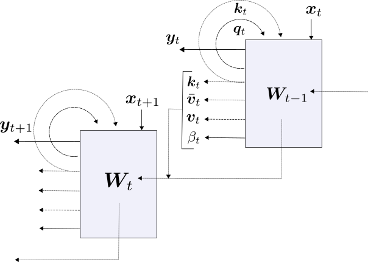
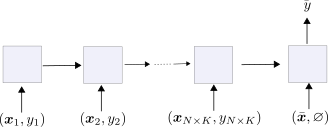
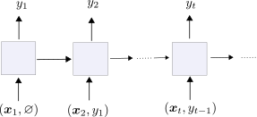
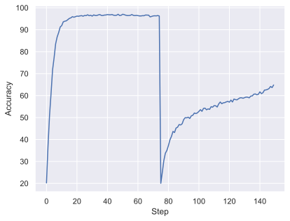
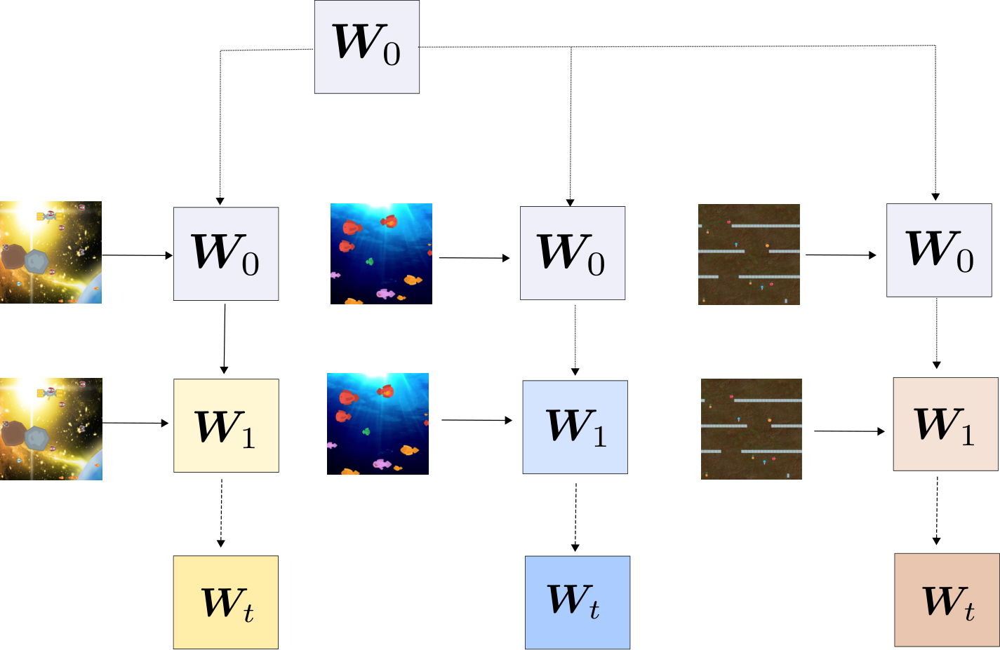
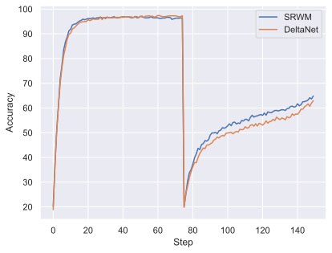
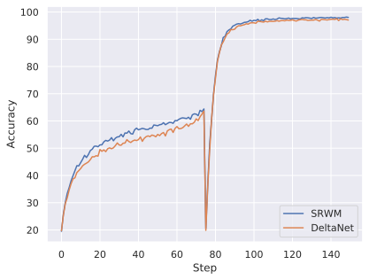
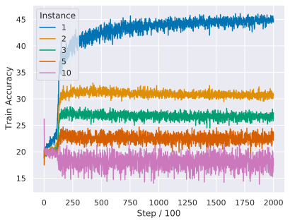
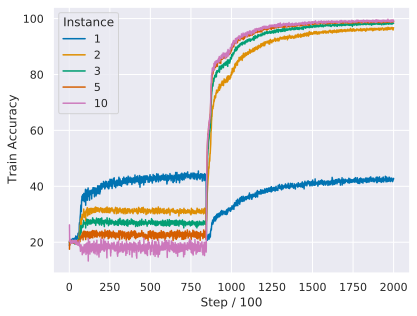

A Modern Self-Referential Weight Matrix That Learns to Modify Itself
Abstract摘要
The weight matrix (WM) of a neural network (NN) is its program. The programs of many traditional NNs are learned through gradient descent in some error function, then remain fixed. The WM of a self-referential NN, however, can keep rapidly modifying all of itself during runtime. In principle, such NNs can meta-learn to learn, and meta-meta-learn to meta-learn to learn, and so on, in the sense of recursive self-improvement. While NN architectures potentially capable of implementing such behaviour have been proposed since the ’90s, there have been few if any practical studies. Here we revisit such NNs, building upon recent successes of fast weight programmers and closely related linear Transformers. We propose a scalable self-referential WM (SRWM) that learns to use outer products and the delta update rule to modify itself. We evaluate our SRWM in supervised few-shot learning and in multi-task reinforcement learning with procedurally generated game environments. Our experiments demonstrate both practical applicability and competitive performance of the proposed SRWM. Our code is public.
神经网络（NN）的权重矩阵（WM）就是其程序。许多传统 NN 的程序通过针对某个误差函数进行梯度下降来学习，此后便保持固定。然而，自指 NN 的 WM 可以在运行期间持续快速修改自身的全部内容。原则上，这类 NN 能够通过元学习学会学习，并通过元元学习学会通过元学习来学习，依此类推，实现递归式自我改进。尽管自 90 年代以来，人们已提出可能实现此类行为的 NN 架构，但实际研究仍寥寥无几。本文基于快速权重编程器及与其密切相关的线性 Transformer 近期取得的成功，重新研究此类 NN。我们提出一种可扩展的自指权重矩阵（SRWM），它能够学习使用外积和 delta 更新规则来修改自身。我们在有监督小样本学习以及采用程序化生成游戏环境的多任务强化学习中评估了 SRWM。实验表明，所提出的 SRWM 既具有实际适用性，也具有竞争力的性能。我们的代码已公开。
Keywords:关键词：
1 Introduction1 引言
The program of a neural network (NN) is its weight matrix (WM) (Schmidhuber, 1990). With prediction tasks, for example, starting from random values, an NN training procedure based on gradient descent might update the WM to minimize an error function that favors compression of given input-output observations (Solomonoff, 1964). The WM becomes permanent once training ends, and its usefulness is evaluated with respect to its generalisation capability on yet unseen data.
神经网络（NN）的程序就是其权重矩阵（WM）(Schmidhuber, 1990)。例如，在预测任务中，基于梯度下降的 NN 训练过程可以从随机值开始更新 WM，以最小化一个有利于压缩给定输入—输出观测的误差函数 (Solomonoff, 1964)。训练结束后，WM 便固定不变，其效用则根据它在尚未见过的数据上的泛化能力进行评估。
Many environments, however, continue to evolve after training has halted (e.g., Lazaridou et al. (2021); Lin et al. (2021)), and the test setting may deviate from training in ways that exceed the NN’s generalisation capability. Then human intervention might be required to re-train or fine-tune the model. Instead, more general and autonomous systems should learn to update their own programs in the light of new experience without such intervention. Especially in multi-task learning and meta-learning (learning to learn; Schmidhuber (1987)), it may be useful to learn how to keep changing and fine-tuning the model in a way that quickly adapts to various situations and new challenges (Hochreiter et al., 2001; Finn et al., 2017).
然而，许多环境在训练停止后仍会持续演化（例如，Lazaridou et al. (2021); Lin et al. (2021)），测试条件与训练条件之间的偏离也可能超出 NN 的泛化能力。此时，可能需要人工干预来重新训练或微调模型。相比之下，更通用、更自主的系统应当学会根据新经验更新自身的程序，而无须此类干预。尤其是在多任务学习和元学习（学习如何学习；Schmidhuber (1987)）中，学习如何持续改变和微调模型，使其能够快速适应各种情境和新的挑战，可能会有所助益 (Hochreiter et al., 2001; Finn et al., 2017)。
In principle, a WM could learn by itself a way of executing rapid WM adaptations in task-dependent and context-dependent fashion through a generic mechanism for recursive self-modification. Various self-modifying NNs have been proposed previously (see Sec. 6). Here we revisit the self-referential WM (Schmidhuber, 1992a; Schmidhuber, 1993a; Schmidhuber, 1993b; Schmidhuber, 1993c) from the ’90s in the light of modern techniques for updating and generating weights. In particular, we leverage mechanisms which are now well established in the context of Fast Weight Programmers (FWPs, Schmidhuber (1991); Schmidhuber (1992b); Schmidhuber (1993d); reviewed in Sec. 2). FWPs have recently seen advancements in terms of performance and scalability, inspired by their formal equivalence (Schlag et al., 2021) to linear variants (Katharopoulos et al., 2020; Choromanski et al., 2021; Peng et al., 2021) of the popular Transformer (Vaswani et al., 2017).
原则上，WM 可以通过一种通用的递归自我修改机制，自行学会根据任务和上下文快速调整 WM 的方法。此前已有多种能够自我修改的 NN 被提出（见第 6 节）。本文结合现代权重更新与生成技术，重新研究 90 年代提出的自指 WM (Schmidhuber, 1992a; Schmidhuber, 1993a; Schmidhuber, 1993b; Schmidhuber, 1993c)。具体而言，我们采用了如今已在快速权重编程器（FWP，Schmidhuber (1991); Schmidhuber (1992b); Schmidhuber (1993d)；第 2 节将对此进行回顾）中得到充分确立的机制。受 FWP 与广泛使用的 Transformer (Vaswani et al., 2017) 的线性变体 (Katharopoulos et al., 2020; Choromanski et al., 2021; Peng et al., 2021) 在形式上等价 (Schlag et al., 2021) 这一结果的启发，近期 FWP 在性能和可扩展性方面取得了进展。
Here we derive a new type of self-referential WM (SRWM) which naturally emerges as an extension to recent works on FWPs. We evaluate the proposed SRWM in three settings. We start by demonstrating that the proposed model is effectively capable of generating useful self-modifications by showing that the model achieves competitive performance on standard few-shot learning benchmarks. Second, by extending the few-shot learning setting to a sequential multi-task learning setting, we test the SRWM’s ability to sequentially adapt itself to changes of the task at runtime. Finally, by using ProcGen (Cobbe et al., 2020), we evaluate it in a multi-task reinforcement learning (RL) setting with procedurally generated game environments. Overall, we demonstrate both practical applicability and competitive performance of the proposed method.
本文推导出一种新型自指 WM（SRWM），它是对近期 FWP 研究工作的自然扩展。我们在三种设置下评估所提出的 SRWM。首先，我们通过展示所提出的模型在标准小样本学习基准上取得的具有竞争力的性能，证明该模型确实能够产生有用的自我修改。其次，我们将小样本学习设置扩展为序列式多任务学习设置，以检验 SRWM 在运行期间随任务变化而依次调整自身的能力。最后，我们使用 ProcGen (Cobbe et al., 2020)，在采用程序化生成游戏环境的多任务强化学习（RL）设置下对其进行评估。总体而言，我们证明了所提出方法的实际适用性及其具有竞争力的性能。
2 Background on Fast Weight Programmers2 快速权重编程器的背景
Here we briefly review the essential components of fast weight programmers (FWPs; Schmidhuber (1991); Schmidhuber (1992b); Schmidhuber (1993d)) which our model is built upon (Sec. 3). In what follows, let $t$, $d_{\text{in}}$, $d_{\text{out}}$, and $d_{\text{key}}$ denote positive integers. FWPs have a slow NN which can rapidly modify weights of another fast NN. The concept has seen a recent revival, in particular in light of its direct formal connection (Schlag et al., 2021) to linear variants (Katharopoulos et al., 2020; Choromanski et al., 2021; Peng et al., 2021; Irie et al., 2021) of the popular Transformer (Vaswani et al., 2017) when the weight generation is based on outer products between keys and values generated by the slow NN (Schmidhuber, 1991). Recent work augmented the basic FWPs (Schmidhuber, 1991; Schmidhuber, 1992b) with an improved elementary programming instruction or update rule invoked by the slow NN to reprogram the fast NN, called delta update rule (akin to the delta rule by Widrow & Hoff (1960)). The resulting “DeltaNet” (Schlag et al., 2021) is a general purpose auto-regressive NN with linear complexity w.r.t. input sequence length, which transforms the input ${\bm{x}}_{t}\in\mathbb{R}^{d_{\text{in}}}$ to the output ${\bm{y}}_{t}\in\mathbb{R}^{d_{\text{out}}}$ as follows:
这里，我们简要回顾快速权重编程器（FWPs; Schmidhuber (1991); Schmidhuber (1992b); Schmidhuber (1993d)）的基本组成部分，我们的模型正是建立在这些组成部分之上的（第 3 节）。下文中，令 $t$、$d_{\text{in}}$、$d_{\text{out}}$ 和 $d_{\text{key}}$ 表示正整数。FWP 包含一个慢速 NN，它能够快速修改另一个快速 NN 的权重。近年来，这一概念重新受到关注，尤其是因为当权重生成基于慢速 NN 所生成的键与值之间的外积时 (Schmidhuber, 1991)，它与广泛使用的 Transformer (Vaswani et al., 2017) 的线性变体 (Katharopoulos et al., 2020; Choromanski et al., 2021; Peng et al., 2021; Irie et al., 2021) 在形式上存在直接联系 (Schlag et al., 2021)。近期研究在基本 FWP (Schmidhuber, 1991; Schmidhuber, 1992b) 的基础上，引入了一种改进的基本编程指令或更新规则，由慢速 NN 调用以对快速 NN 重新编程，称为 delta 更新规则（类似于 Widrow & Hoff (1960) 提出的 delta 规则）。由此得到的“DeltaNet” (Schlag et al., 2021) 是一种通用自回归 NN，其计算复杂度随输入序列长度呈线性增长，并按如下方式将输入 ${\bm{x}}_{t}\in\mathbb{R}^{d_{\text{in}}}$ 转换为输出 ${\bm{y}}_{t}\in\mathbb{R}^{d_{\text{out}}}$：
where $\otimes$ denotes the outer product, $\sigma$ is a sigmoid function, and $\phi$ is an element-wise activation function whose output elements are all positive and sum up to one (e.g. softmax). In Eq. 1, the input ${\bm{x}}_{t}$ is first projected to key ${\bm{k}}_{t}\in\mathbb{R}^{d_{\text{key}}}$, value ${\bm{v}}_{t}\in\mathbb{R}^{d_{\text{out}}}$ , query ${\bm{q}}_{t}\in\mathbb{R}^{d_{\text{key}}}$ vectors and a scalar $\beta_{t}\in\mathbb{R}$ using a trainable weight matrix ${\bm{W}}_{\text{slow}}\in\mathbb{R}^{(d_{\text{out}}+2*d_{\text{key}}+1)\times d_{\text{in}}}$. The generated key vector ${\bm{k}}_{t}$ and a learning rate $\beta_{t}$ (also generated by the slow NN) are used to update the fast weight matrix ${\bm{W}}_{t-1}$ using the delta rule expressed in Eqs. 2-3. The fast weight matrix is typically initialized to zero i.e. ${\bm{W}}_{0}=0$. The final output ${\bm{y}}_{t}$ is obtained by querying the updated fast weight matrix ${\bm{W}}_{t}$ using a generated query vector ${\bm{q}}_{t}$ (Eq. 4). We note that the use of $\phi$ function for both writing to (Eq. 3) and reading from (Eqs. 2 and 4) the fast weights is crucial for stability when the delta rule is used (we refer the readers to Schlag et al. (2021) for detailed explanations).
其中，$\otimes$ 表示外积，$\sigma$ 是 sigmoid 函数，$\phi$ 是逐元素激活函数，其输出元素均为正且总和为一（例如 softmax）。在式 1 中，首先使用可训练的权重矩阵 ${\bm{W}}_{\text{slow}}\in\mathbb{R}^{(d_{\text{out}}+2*d_{\text{key}}+1)\times d_{\text{in}}}$，将输入 ${\bm{x}}_{t}$ 投影为键向量 ${\bm{k}}_{t}\in\mathbb{R}^{d_{\text{key}}}$、值向量 ${\bm{v}}_{t}\in\mathbb{R}^{d_{\text{out}}}$、查询向量 ${\bm{q}}_{t}\in\mathbb{R}^{d_{\text{key}}}$ 以及标量 $\beta_{t}\in\mathbb{R}$。所生成的键向量 ${\bm{k}}_{t}$ 和学习率 $\beta_{t}$（同样由慢速 NN 生成）用于通过式 2–3 所表示的 delta 规则更新快速权重矩阵 ${\bm{W}}_{t-1}$。快速权重矩阵通常初始化为零，即 ${\bm{W}}_{0}=0$。最终输出 ${\bm{y}}_{t}$ 通过使用生成的查询向量 ${\bm{q}}_{t}$ 查询更新后的快速权重矩阵 ${\bm{W}}_{t}$ 得到（式 4）。我们指出，在使用 delta 规则时，对快速权重的写入（式 3）和读取（式 2 和 4）均使用 $\phi$ 函数，这对于稳定性至关重要（详细解释请参阅 Schlag et al. (2021)）。
In practice, we use the multi-head version (Vaswani et al., 2017) of the computation above, that is, after the projection (Eq. 1), the vectors ${\bm{k}}_{t}$, ${\bm{v}}_{t}$, ${\bm{q}}_{t}$ are split into equally sized $H$ sub-vectors, and the operations in Eqs. 2-4 are conducted by $H$ computation heads independently. Also, the layer above is typically used as a replacement for self-attention layers in a regular Transformer architecture (Vaswani et al., 2017) while preserving other components such as feedforward blocks, layer-norm and residual connections across layers.
在实践中，我们使用上述计算的多头版本 (Vaswani et al., 2017)，即在投影（式 1）之后，将向量 ${\bm{k}}_{t}$、${\bm{v}}_{t}$、${\bm{q}}_{t}$ 分别划分为 $H$ 个大小相等的子向量，并由 $H$ 个计算头独立执行式 2–4 中的操作。此外，上述层通常用于替换常规 Transformer 架构 (Vaswani et al., 2017) 中的自注意力层，同时保留前馈块、层归一化和跨层残差连接等其他组成部分。
The slow NN or the programmer (here a one-layer feedforward NN; Eq. 1) with slow weights ${\bm{W}}_{\text{slow}}$ learns by gradient descent to continuously modify or program the fast NN (here also a one-layer feedforward NN; Eq. 4) with fast weights ${\bm{W}}_{t}$ as it continually receives a stream of inputs. For further extensions of this concept to more complex slow and fast NN architectures such as recurrent NNs, we refer the readers to another recent study (Irie et al., 2021).
具有慢速权重 ${\bm{W}}_{\text{slow}}$ 的慢速 NN 或编程器（此处为单层前馈 NN；式 1）在持续接收输入流的过程中，通过梯度下降学习如何不断修改或编程具有快速权重 ${\bm{W}}_{t}$ 的快速 NN（此处同样为单层前馈 NN；式 4）。关于将这一概念进一步扩展到循环 NN 等更复杂的慢速和快速 NN 架构，请参阅另一项近期研究 (Irie et al., 2021)。
FWPs are of great interest from the perspective of context-sensitive information processing, since the fast WM is completely context-dependent: while processing some sequence, a continually changing custom fast NN is built on the fly.
从上下文敏感信息处理的角度来看，FWP 具有重要的研究价值，因为快速权重矩阵完全依赖于上下文：在处理某个序列时，系统会即时构建一个持续变化的定制快速 NN。
Here we leverage this mechanism to design a new kind of FWP which programs itself. It can be naturally derived from the operations described above, resulting in a “modern” version of the self-referential weight matrix (Schmidhuber, 1992a; Schmidhuber, 1993a; Schmidhuber, 1993b; Schmidhuber, 1993c) of the ’90s.
这里，我们利用这一机制设计了一种能够对自身编程的新型 FWP。它可以从上述操作中自然推导出来，从而得到 90 年代自指权重矩阵 (Schmidhuber, 1992a; Schmidhuber, 1993a; Schmidhuber, 1993b; Schmidhuber, 1993c) 的“现代”版本。

Figure 1: A “modern” self-referential weight matrix (SRWM).
图 1：一种“现代”自指权重矩阵（SRWM）。
3 A Modern Self-Referential Weight Matrix3 一种现代自指权重矩阵
Our “modern” self-referential weight matrix (SRWM) learns to train itself through self-invented key/value “training” patterns and learning rates, invoking sequences of elementary programming instructions based on outer products and the delta update rule, as in the recently proposed variants (Schlag et al., 2021) of FWPs (Sec. 2).
我们的“现代”自指权重矩阵（SRWM）通过自行构造的键/值“训练”模式和学习率，学习如何训练自身，并调用基于外积和 delta 更新规则的基本编程指令序列，这与近期提出的 FWP 变体 (Schlag et al., 2021)（第 2 节）中的做法相同。
Given an input ${\bm{x}}_{t}\in\mathbb{R}^{d_{\text{in}}}$ at time $t$, our SRWM ${\bm{W}}_{t-1}\in\mathbb{R}^{(d_{\text{out}}+2*d_{\text{in}}+1)\times d_{\text{in}}}$ produces four variables $[{\bm{y}}_{t},{\bm{q}}_{t},{\bm{k}}_{t},\beta_{t}]$ where ${\bm{y}}_{t}\in\mathbb{R}^{d_{\text{out}}}$ is the output of this layer at the current time step, ${\bm{q}}_{t}\in\mathbb{R}^{d_{\text{in}}}$ and ${\bm{k}}_{t}\in\mathbb{R}^{d_{\text{in}}}$ are query and key vectors, and $\beta_{t}\in\mathbb{R}$ is the self-invented learning rate to be used by the delta rule. In analogy to the terminology introduced by the original SRWM papers (Schmidhuber, 1992a; Schmidhuber, 1993a; Schmidhuber, 1993b; Schmidhuber, 1993c), ${\bm{k}}_{t}\in\mathbb{R}^{d_{\text{in}}}$ is the modifier-key vector, representing the key whose current value in the SRWM has to be modified, and ${\bm{q}}_{t}\in\mathbb{R}^{d_{\text{in}}}$ is the analyser-query which is again fed to the SRWM to retrieve a new “value” vector to be associated with the modifier-key.
给定时刻 $t$ 的输入 ${\bm{x}}_{t}\in\mathbb{R}^{d_{\text{in}}}$，我们的 SRWM ${\bm{W}}_{t-1}\in\mathbb{R}^{(d_{\text{out}}+2*d_{\text{in}}+1)\times d_{\text{in}}}$ 生成四个变量 $[{\bm{y}}_{t},{\bm{q}}_{t},{\bm{k}}_{t},\beta_{t}]$，其中，${\bm{y}}_{t}\in\mathbb{R}^{d_{\text{out}}}$ 是该层在当前时间步的输出，${\bm{q}}_{t}\in\mathbb{R}^{d_{\text{in}}}$ 和 ${\bm{k}}_{t}\in\mathbb{R}^{d_{\text{in}}}$ 分别为查询向量和键向量，$\beta_{t}\in\mathbb{R}$ 是用于 delta 规则的自主生成的学习率。参照最初的 SRWM 论文 (Schmidhuber, 1992a; Schmidhuber, 1993a; Schmidhuber, 1993b; Schmidhuber, 1993c) 所引入的术语，${\bm{k}}_{t}\in\mathbb{R}^{d_{\text{in}}}$ 是修改器键向量，表示其在 SRWM 中的当前值需要被修改的键；${\bm{q}}_{t}\in\mathbb{R}^{d_{\text{in}}}$ 则是分析器查询，它被再次输入 SRWM，以检索一个将与修改器键关联的新“值”向量。
The overall dynamics can be expressed as simply as follows:
整体动态过程可以简洁地表示如下：
where the value vectors have dimensions: ${\bm{v}}_{t},\bar{{\bm{v}}}_{t}\in\mathbb{R}^{(d_{\text{out}}+2*d_{\text{in}}+1)}$. Figure 1 illustrates the model.
其中，值向量的维度为：${\bm{v}}_{t},\bar{{\bm{v}}}_{t}\in\mathbb{R}^{(d_{\text{out}}+2*d_{\text{in}}+1)}$。图 1 展示了该模型。
Importantly, the initial values of the SRWM ${\bm{W}}_{0}$ are the only parameters in this layer which are trained by gradient descent. In practice, we extend the output dimension of the matrix from “3D+1” $(d_{\text{out}}+2*d_{\text{in}}+1)$ to “3D+4” $(d_{\text{out}}+2*d_{\text{in}}+4)$ to generate four different, self-invented, time-varying learning rates $\beta_{t}\in\mathbb{R}^{4}$ to be used in Eq. 8 for the four sub-matrices of ${\bm{W}}_{t-1}=[{\bm{W}}^{y}_{t-1},{\bm{W}}^{q}_{t-1},{\bm{W}}^{k}_{t-1},{\bm{W}}^{\beta}_{t-1}]$ used to produce ${\bm{y}}_{t}$, ${\bm{q}}_{t}$, ${\bm{k}}_{t}$, and $\beta_{t}$ in Eq. 5. For efficient computation, we also make use of multi-head computation as is done in regular Transformers (Vaswani et al., 2017; Katharopoulos et al., 2020). Please refer to Appendix A for the full description.
重要的是，SRWM 的初始值 ${\bm{W}}_{0}$ 是该层中唯一通过梯度下降训练的参数。在实践中，我们将矩阵的输出维度从“3D+1” $(d_{\text{out}}+2*d_{\text{in}}+1)$ 扩展至“3D+4” $(d_{\text{out}}+2*d_{\text{in}}+4)$，以生成四个不同的、自主生成且随时间变化的学习率 $\beta_{t}\in\mathbb{R}^{4}$，用于式 8 中 ${\bm{W}}_{t-1}=[{\bm{W}}^{y}_{t-1},{\bm{W}}^{q}_{t-1},{\bm{W}}^{k}_{t-1},{\bm{W}}^{\beta}_{t-1}]$ 的四个子矩阵，这些子矩阵在式 5 中分别用于生成 ${\bm{y}}_{t}$、${\bm{q}}_{t}$、${\bm{k}}_{t}$ 和 $\beta_{t}$。为提高计算效率，我们还采用了常规 Transformer 中使用的多头计算方式 (Vaswani et al., 2017; Katharopoulos et al., 2020)。完整描述请参见附录 A。
The SRWM described above can potentially be used to replace any regular WM. Here we mainly focus on a model which can be obtained by replacing Eqs. 1-4 in the baseline DeltaNet by the corresponding SRWM equations Eqs. 5-8. In Appendix C.1, we further show preliminary results for another type of model incorporating an SRWM, which is also based on the DeltaNet but where we replace its slow weight matrix (Eq. 1) by an SRWM (Eqs. 5-8).
上述 SRWM 有望用于替换任意常规 WM。本文主要关注一种可通过将基线 DeltaNet 中的式 1-4 替换为相应的 SRWM 方程，即式 5-8，而得到的模型。在附录 C.1 中，我们进一步给出了另一类包含 SRWM 的模型的初步结果，该模型同样基于 DeltaNet，但将其慢速权重矩阵（式 1）替换为 SRWM（式 5-8）。

Figure 2: Synchronous-label setting for $N$-way $K$-shot learning (like in Mishra et al. (2018)). The correct label is fed together with the corresponding input for the first $N\times K$ tokens. Label prediction is only done for the ($NK$+1)-th input which is presented without the label.
图 2：$N$ 路 $K$ 样本学习的同步标签设置（与 Mishra et al. (2018) 中的设置相同）。对于前 $N\times K$ 个词元，正确标签与对应输入一同馈入。仅对第（$NK$+1）个输入进行标签预测，该输入不附带标签。
Table 1: Single task, 5-way, few-shot classification test accuracies (%) on Omniglot and Mini-ImageNet. The bottom section shows the generic sequence models, while the top part shows other related approaches. The numbers marked by * are taken from the corresponding papers. Following the standard convention (Ravi & Larochelle, 2017), we report 95% confidence interval computed over five sets of test episodes. For further details, we refer to Appendix B.
表 1：在 Omniglot 和 Mini-ImageNet 上的单任务、5 路小样本分类测试准确率 (%)。下半部分列出通用序列模型，上半部分列出其他相关方法。标有 * 的数值取自相应论文。遵循标准惯例 (Ravi & Larochelle, 2017)，我们报告基于五组测试回合计算的 95% 置信区间。更多细节请参见附录 B。
| Omniglot | Mini-ImageNet | |||
| 1-shot 1 样本 | Backend 后端 | 1-shot 1 样本 | 5-shot 5 样本 | |
| MAML* (Finn et al., 2017) | 98.7 $\pm$ 0.4 | Conv-4-32 | 48.7 $\pm$ 1.8 | 63.1 $\pm$ 0.9 |
| fwCNN-Hebb* (Munkhdalai & Trischler, 2018) | 99.4 $\pm$ 0.1 | Conv-5-64 | 50.2 $\pm$ 0.4 | 64.8 $\pm$ 0.5 |
| HyperTransformer* (Zhmoginov et al., 2022) | 96.2 | Conv-4-32 | 53.8 | 67.1 |
| SNAIL* (Mishra et al., 2018) | 99.1 $\pm$ 0.2 | Conv-4-32 | 45.1 | 55.2 |
| Delta Net | 97.2 $\pm$ 0.0 | Conv-4-32 | 47.0 $\pm$ 0.1 | 62.7 $\pm$ 0.1 |
| SRWM | 97.4 $\pm$ 0.0 | Conv-4-32 | 47.0 $\pm$ 0.2 | 61.4 $\pm$ 0.1 |
4 Experiments4 实验
Can the self-referential dynamics described in Eqs. 5-8 generate useful self-modifications? The overall goal of our experiments is to evaluate the proposed SRWM on various types of tasks which require “good” self-modifications. We conduct experiments on standard supervised few-shot learning tasks (Sec. 4.1) and multi-task reinforcement learning (RL) in game environments (Sec. 4.3). In addition, we show how our SRWM can be trained to efficiently adapt itself in a sequential multi-task few-shot learning setting (Sec. 4.2). Multi-task settings are particularly relevant for evaluating SRWMs, since unlike the baseline DeltaNet (which uses the same fixed slow weights to generate fast weights for all tasks), SRWMs can potentially learn to even adapt the way it adapts itself to each task as it receives task-specific inputs.
式 5-8 所描述的自指动态过程能否产生有用的自我修改？我们实验的总体目标是在各类需要“良好”自我修改的任务上评估所提出的 SRWM。我们在标准有监督小样本学习任务（第 4.1 节）和游戏环境中的多任务强化学习（RL）（第 4.3 节）上开展实验。此外，我们展示了如何训练 SRWM，使其在序列式多任务小样本学习设置中高效地进行自我适应（第 4.2 节）。多任务设置尤其适合评估 SRWM，因为与基线 DeltaNet（对所有任务均使用相同的固定慢速权重来生成快速权重）不同，SRWM 在接收任务特定输入时，甚至有望学会针对每项任务调整其自我适应的方式。

Figure 3: Delayed-label setting (like in Hochreiter et al. (2001); Santoro et al. (2016)). The correct label is fed one step after the corresponding input. Predictions take place at each step.
图 3：延迟标签设置（与 Hochreiter et al. (2001); Santoro et al. (2016) 中的设置相同）。正确标签在对应输入之后一个时间步馈入。每个时间步均进行预测。
4.1 Standard Few-Shot Learning4.1 标准小样本学习
We start with evaluating the proposed SRWM’s capability to generate useful self-modifications on standard supervised few-shot image classification tasks. We conduct experiments on the classic Omniglot (Lake et al., 2015) and Mini-ImageNet (Vinyals et al., 2016; Ravi & Larochelle, 2017) datasets. For further details on the datasets, we refer to the respective references and Appendix B where we also provide extra experimental results on the Fewshot-CIFAR100 (Oreshkin et al., 2018) dataset.
我们首先在标准有监督小样本图像分类任务上，评估所提出的 SRWM 生成有效自我修改的能力。我们在经典的 Omniglot (Lake et al., 2015) 和 Mini-ImageNet (Vinyals et al., 2016; Ravi & Larochelle, 2017) 数据集上开展实验。有关这些数据集的更多细节，请参阅相应参考文献和附录 B；我们还在附录 B 中提供了 Fewshot-CIFAR100 (Oreshkin et al., 2018) 数据集上的额外实验结果。
Let $N$, $K$ and $C$ denote positive integers. The task of few-shot image classification, or $N$-way $K$-shot image classification based on a dataset containing $C$ classes, is structured through so-called episodes. In each episode, $N$ distinct classes are randomly drawn from $C$. The resulting $N$ classes are re-labelled such that each class is assigned to one out of $N$ distinct random label indices. For each of these $N$ classes, $K$ examples are randomly sampled. The set of resulting $N\times K$ labelled images is called the support set. The goal of the task is to predict the label of another image (a query image that is not in the support set) which is sampled from one of the $N$ classes, based on the information available in the support set.
令 $N$、$K$ 和 $C$ 表示正整数。小样本图像分类任务，即基于包含 $C$ 个类别的数据集进行的 $N$ 路 $K$ 样本图像分类任务，以所谓的情节为单位组织。在每个情节中，从 $C$ 个类别中随机抽取 $N$ 个不同的类别。对抽取出的 $N$ 个类别重新标注，将每个类别分配给 $N$ 个互不相同的随机标签索引之一。对于这 $N$ 个类别中的每一个，随机采样 $K$ 个样本。由此得到的 $N\times K$ 张带标签图像所构成的集合称为支持集。该任务的目标是根据支持集中可用的信息，预测从这 $N$ 个类别之一中采样的另一张图像（不属于支持集的查询图像）的标签。
While there are several ways of approaching this problem, we are evaluating our SRWM in the sequential learning approach (Santoro et al., 2016; Hochreiter et al., 2001). That is, the image/label pairs of the support set are randomly ordered to form a sequence which is read by a sequence-processing NN (e.g., a recurrent NN). By encoding the support set information into its internal state, the corresponding NN predicts the label of the query image. In the case of our SRWM, the model generates updates of its own weights as it reads the sequence of support set items. The generated weights are used to compute the final prediction for the query image. To fully specify this approach, we also need to explain how input image/label pairs are fed to the model. Here we follow the approach used by Mishra et al. (2018) which we refer to as the synchronous-label setting illustrated in Figure 2. This strategy is specifically designed for $N$-way $K$-shot learning, which consists in feeding the input and its label to the model at the same time for $N\times K$ items in the support set. The model only predicts the label of the $(N\times K+1)$-th input which is the query image presented without label. An alternative approach (Santoro et al., 2016) which we call the delayed label setting (Figure 3) is used later in Sec. 4.2.
虽然有多种方法可以解决这一问题，但我们采用序列学习方法 (Santoro et al., 2016; Hochreiter et al., 2001) 来评估 SRWM。具体而言，将支持集中的图像/标签对随机排序以形成一个序列，再由序列处理神经网络（例如循环神经网络）读取该序列。相应的神经网络将支持集信息编码到其内部状态中，据此预测查询图像的标签。对于我们的 SRWM，模型在读取支持集条目序列的同时，生成对自身权重的更新。生成的权重用于计算查询图像的最终预测。为了完整说明这一方法，我们还需要解释如何将输入图像/标签对馈送给模型。这里，我们遵循 Mishra et al. (2018) 所采用的方法，将其称为同步标签设置，如图 2 所示。该策略专为 $N$ 路 $K$ 样本学习设计，其做法是，对于支持集中的 $N\times K$ 个条目，将输入及其标签同时馈送给模型。模型仅预测第 $(N\times K+1)$ 个输入的标签，该输入是未提供标签的查询图像。另一种方法 (Santoro et al., 2016) 被我们称为延迟标签设置（图 3），将在后文第 4.2 节中使用。
Mishra et al. (2018)’s SNAIL model serves as a baseline in our experiments as it is a generic Transformer-like sequence processing model where the regular feedforward block is replaced by 1D convolution (Waibel et al., 1989). Other related approaches include the fwCNN-Hebb model by Munkhdalai & Trischler (2018) and the recently proposed HyperTransformer (Zhmoginov et al., 2022), as well as the standard MAML (Finn et al., 2017; Finn & Levine, 2018). Both fwCNN-Hebb and HyperTransformer generate fast weights of an NN based on the support set information. The fwCNN-Hebb is an outer product based fast weight programmer (similar to ours but using the purely additive update rule like in the standard Linear Transformers) in which the fast net is a linear layer before the final softmax layer. A crucial difference to our generic FWPs is that in the fwCNN-Hebb, key vectors are generated from the images while the values are generated from the labels, which is a specific design choice reflecting the task of few-shot learning. In the HyperTransformers, the fast net is a convolutional NN whose weights are parameterised by the Transformer encoder architecture taking images and their labels as inputs. We note that these two methods are specifically designed for few-shot learning, unlike our models and SNAIL which are generic sequence processing NNs directly applicable beyond few-shot learning e.g., to RL as in Sec. 4.3. MAML optimises the initial weights for future fine-tuning via gradient descent. In the SRWM, the initial weights also learn and encode its own self-modification algorithm. All models presented here use the same vision backend: the 4-layer convolutional net (Vinyals et al., 2016) with 32 channels for Mini-ImageNet (Conv-4-32), and 64 channels for Omniglot, except the fwCNN-Hebb which uses 5 layers and 64 channels (Conv-5-64) in both cases. Additional details of the model architecture are explained in Appendix B.
Mishra et al. (2018) 的 SNAIL 模型作为我们实验中的基线，因为它是一种通用的类 Transformer 序列处理模型，其中常规前馈模块被 1D 卷积 (Waibel et al., 1989) 所替代。其他相关方法包括 Munkhdalai & Trischler (2018) 提出的 fwCNN-Hebb 模型、近期提出的 HyperTransformer (Zhmoginov et al., 2022)，以及标准的 MAML (Finn et al., 2017; Finn & Levine, 2018)。fwCNN-Hebb 和 HyperTransformer 都根据支持集信息生成神经网络的快速权重。fwCNN-Hebb 是一种基于外积的快速权重编程器（与我们的方法类似，但采用与标准 Linear Transformers 中相同的纯加性更新规则），其中的快速网络是位于最终 softmax 层之前的一个线性层。与我们的通用 FWP 的一个关键区别在于，fwCNN-Hebb 的键向量由图像生成，而值向量由标签生成，这是一种针对小样本学习任务的特定设计选择。在 HyperTransformers 中，快速网络是一个卷积神经网络，其权重由以图像及其标签为输入的 Transformer 编码器架构进行参数化。我们指出，这两种方法是专为小样本学习设计的，而我们的模型和 SNAIL 是通用的序列处理神经网络，可直接应用于小样本学习之外的任务，例如第 4.3 节中的 RL。MAML 优化初始权重，以便后续通过梯度下降进行微调。在 SRWM 中，初始权重还会学习并编码其自身的自我修改算法。这里介绍的所有模型都使用相同的视觉后端：对于 Mini-ImageNet，使用具有 32 个通道的 4 层卷积网络 (Vinyals et al., 2016)（Conv-4-32）；对于 Omniglot，则使用具有 64 个通道的同一网络，但 fwCNN-Hebb 除外，它在这两个数据集上均使用具有 5 层和 64 个通道的网络（Conv-5-64）。模型架构的更多细节见附录 B。
The results are summarised in Table 1. Overall, the proposed SRWM performs well among the generic approaches. Comparing the SRWM to the SNAIL baseline, the SRWM achieves very competitive performance on Mini-ImageNet. DeltaNet and SRWM tend to have similar performance. This is a satisfactory result, as it shows that a single self-modifying WM (instead of separate slow and fast nets) remains competitive in this single task scenario.
结果汇总于表 1。总体而言，所提出的 SRWM 在通用方法中表现良好。与 SNAIL 基线相比，SRWM 在 Mini-ImageNet 上取得了极具竞争力的性能。DeltaNet 和 SRWM 的性能通常相近。这一结果令人满意，因为它表明，在这一单任务场景中，单个可自我修改的 WM（代替相互独立的慢速网络和快速网络）仍然具有竞争力。
While we find the HyperTransformer to outperform all other models considered here, our performance is respectable compared to that of MAML without requiring bi-level optimisation, and fwCNN-Hebb without inductive bias on the key/value generation from image/label, respectively. Although the SRWM is a very generic approach, its overall performance is thus competitive, demonstrating the effectiveness of the proposed self-referential dynamics (the main goal of this experiment).
尽管我们发现 HyperTransformer 优于此处考察的所有其他模型，但我们的方法无须双层优化即可取得与 MAML 相比相当可观的性能，也无须对由图像/标签生成键/值的过程施加归纳偏置，即可取得与 fwCNN-Hebb 相比相当可观的性能。因此，尽管 SRWM 是一种非常通用的方法，其整体性能仍具有竞争力，表明了所提出的自指动态机制的有效性（这是本实验的主要目标）。
Table 2: Total and instance-level accuracies (%) for sequential multi-task few-shot learning experiments (Sec. 4.2). Regarding the instance-level accuracy, column $k\in\{1,2,3,5,10\}$ shows the percentage of correctly predicted $k$-th instances from each class. This is for the test time scenario where the model is first tasked to learn to predict Omniglot and then Mini-ImageNet.
表 2：序贯多任务小样本学习实验（第 4.2 节）的总体准确率和实例级准确率（%）。对于实例级准确率，$k\in\{1,2,3,5,10\}$ 列给出了各类别中第 $k$ 个实例被正确预测的百分比。这里对应的测试场景是，模型首先需要学习预测 Omniglot，随后学习预测 Mini-ImageNet。
| Task 任务 | Model 模型 | 1 | 2 | 3 | 5 | 10 | Total 总体 |
| Omniglot | DeltaNet | 39.1 | 91.2 | 93.9 | 95.8 | 96.8 | 92.2 |
| SRWM | 40.6 | 92.1 | 94.8 | 96.3 | 96.7 | 92.3 | |
| Mini-ImageNet | DeltaNet | 20.8 | 43.5 | 48.2 | 51.3 | 54.8 | 50.4 |
| SRWM | 20.9 | 46.0 | 50.3 | 54.2 | 58.0 | 53.3 |
4.2 Sequential Multi-Task Adaptation4.2 序贯多任务适应
The basic few-shot learning experiments presented in the previous section demonstrate that the very generic SRWM can effectively generate useful weight updates, achieving competitive performance on standard benchmarks. Now we are interested in testing its self-referential dynamics on a task which requires adaptation to environmental changes at runtime. We introduce two modifications to the few-shot learning setting above. First, instead of specifically training the model for $N$-way $K$-shot classification using the synchronous-label setting (Figure 2), we train our model in the delayed-label setting (Hochreiter et al., 2001) as illustrated in Figure 3. Here the model makes prediction at each time step by receiving an input image to be classified and the correct label of the previous input (the label feeds are thus shifted/delayed by one time step). This setting is convenient for evaluating the model on a continuous stream of predictions/solutions. Second, the sequence of images to be predicted is constructed by concatenating two image sequences sampled from two different datasets: Omniglot and Mini-ImageNet. The model first receives a stream of images from one of the datasets; at some point, the dataset suddenly changes, to simulate a change of environment. The model has to learn to adapt itself to this shift without human intervention, in a continual execution of its program.
上一节介绍的基础小样本学习实验表明，通用性很强的 SRWM 能够有效生成有用的权重更新，在标准基准上取得具有竞争力的性能。现在，我们希望在一项要求模型在运行时适应环境变化的任务上，检验其自指动态机制。我们对上述小样本学习设置作了两项修改。首先，我们不再使用同步标签设置（图 2）专门训练模型进行 $N$ 类 $K$ 样本分类，而是在图 3 所示的延迟标签设置 (Hochreiter et al., 2001) 下训练模型。在此设置中，模型在每个时间步接收一幅待分类的输入图像以及上一个输入的正确标签，并作出预测（因此，输入的标签被移位/延迟了一个时间步）。这种设置便于在连续的预测/求解流上评估模型。其次，将从两个不同数据集 Omniglot 和 Mini-ImageNet 中采样得到的两段图像序列拼接起来，构成待预测的图像序列。模型首先接收来自其中一个数据集的图像流；在某一时刻，数据集突然切换，以模拟环境变化。模型必须在持续执行其程序的过程中，学会在无人干预的情况下自行适应这一转变。
Note that our goal is to construct a task which requires adaptation to sudden changes during the model’s runtime, which is different from continual few-shot learning (e.g. Yap et al. (2021)) whose goal is to successively meta-train on multiple few-shot learning tasks.
请注意，我们的目标是构建一项要求模型在运行时适应突发变化的任务，这与持续小样本学习（例如 Yap et al. (2021)）不同，后者的目标是在多个小样本学习任务上依次进行元训练。
We conduct experiments in a 5-way classification setting with concatenation of Omniglot and Mini-ImageNet segments containing up to 15 examples per class in each segment. The concatenation order is alternated for each batch, and training segment lengths are randomised by trimming. Regardless of model type, we find that training models in the delayed-label setting is more difficult than in the synchronous-label setting. We observe that in many configurations, the model gets stuck at a sub-optimal behaviour where it learns to improve its class-averaged zero-shot accuracy (apparently by learning to output one of the unused labels for a new class appearing in the sequence for the first time), but fails to learn to properly learn from the feedback at each step. The most crucial hyper-parameter we identified was the large enough batch size. Additional details on practicalities are shared in Appendix B.5.
我们在 5 类分类设置下开展实验，将 Omniglot 和 Mini-ImageNet 的序列片段拼接起来，每个片段中每类最多包含 15 个样本。每个批次的拼接顺序交替变换，并通过截短使训练片段的长度随机化。我们发现，无论模型类型如何，在延迟标签设置下训练模型都比在同步标签设置下更加困难。我们观察到，在许多配置中，模型会陷入一种次优行为：它学会了提高其按类别平均的零样本准确率（显然是通过学习为序列中首次出现的新类别输出一个尚未使用的标签来实现的），却未能学会如何恰当地利用每一步的反馈进行学习。我们发现，最关键的超参数是足够大的批次大小。附录 B.5 提供了有关实践细节的更多信息。
In the end, we successfully trained both the DeltaNet baseline and the SRWM on this sequential adaptation task. Figure 4 shows the evolution of the SRWM’s test time accuracy as it gets more inputs. In this test setting, the model starts with receiving a stream of samples from Omniglot. At step 74, the task changes; the model now has to classify images sampled from Mini-ImageNet. The accuracy obviously drops due to this change, since the model can not know which class the new datapoint belongs to, but it effectively adapts itself and starts learning the second task. Table 2 compares the DeltaNet to the SRWM. While their performance is similar in the single task scenario (Table 1), the SRWM achieves a higher accuracy in this multi-task setting, demonstrating its rapid adaptation capability. In Appendix B.5, we also provide results for the test scenario with the reversed testing order, i.e., Mini-ImageNet then Omniglot.
最终，我们在这项序贯适应任务上成功训练了 DeltaNet 基线模型和 SRWM。图 4 展示了 SRWM 的测试准确率随着输入增多而变化的情况。在这一测试设置中，模型最初接收来自 Omniglot 的样本流。在第 74 步，任务发生变化；此时模型必须对从 Mini-ImageNet 中采样的图像进行分类。由于模型无法知道新数据点属于哪个类别，这一变化显然会导致准确率下降，但模型能够有效地自行适应，并开始学习第二项任务。表 2 比较了 DeltaNet 与 SRWM。尽管二者在单任务场景中的性能相近（表 1），但 SRWM 在这一多任务设置中取得了更高的准确率，表明其具有快速适应能力。在附录 B.5 中，我们还给出了测试顺序颠倒的测试场景下的结果，即先测试 Mini-ImageNet，再测试 Omniglot。

Figure 4: Average test accuracy (%) of the SRWM-based model as a function of the number of steps in the sequential multi-task adaptation setting (Sec. 4.2). A stream of datapoints is fed to the model in delayed-label fashion (Figure 3). The datapoints are sampled from Omniglot until step 74 (where the accuracy drops), then from Mini-ImageNet.
图 4：在序贯多任务适应设置（第 4.2 节）中，基于 SRWM 的模型的平均测试准确率（%）随步数的变化。数据点流以延迟标签的方式输入模型（图 3）。截至第 74 步（准确率在此处下降），数据点均从 Omniglot 中采样，此后则从 Mini-ImageNet 中采样。
4.3 Multi-Task Reinforcement Learning (RL)4.3 多任务强化学习（RL）
We finally evaluate the proposed model in a multi-task RL setting using procedurally generated game environments of ProcGen (Cobbe et al., 2020). The corresponding setting is illustrated in Figure 5. Unlike other popular game environments such as Atari (Bellemare et al., 2016), ProcGen provides various procedurally different levels. This allows for creating clean train/test splits. In addition, working with diverse levels is especially relevant to our setting, as we wish to build models which are adaptive to changes across game types, as well as diversity within the same game.
最后，我们在多任务 RL 设置下，使用 ProcGen (Cobbe et al., 2020) 中按程序生成的游戏环境评估所提出的模型。相应设置如图 5 所示。与 Atari (Bellemare et al., 2016) 等其他流行的游戏环境不同，ProcGen 提供了通过程序生成的各不相同的关卡。这使得训练集与测试集能够得到清晰划分。此外，使用多样化的关卡与我们的设置尤为相关，因为我们希望构建的模型既能适应不同游戏类型之间的变化，也能适应同一游戏内部的多样性。
General Settings.总体设置。
In our main experiment, we jointly train on 6 environments, namely, Bigfish, Fruitbot, Maze, Leaper, Plunder, and Starpilot in the easy distribution. We conduct distributed training using the standard IMPALA (Espeholt et al., 2018) architecture implemented in Torchbeast (Küttler et al., 2019). We use 48 actors (i.e. 8 actors per environment). All our models use the common large architecture of Espeholt et al. (2018) which consists of a 15-layer residual convolutional vision model. They differ from each other by the “memory” module inserted between the vision stem and the output layer. In addition to our SRWM model, we train the baseline IMPALA feed-forward and LSTM (Gers et al., 2000; Hochreiter & Schmidhuber, 1997) models, as well as two additional baselines: the DeltaNet (Schlag et al., 2021) and a “Fake SR” model which is the SRWM model without the self-modification mechanism. (i.e. we only keep the “y”-part in Eq. 5). We set a backpropagation span of 50 steps to train self-modification as well as LSTM and DeltaNet baselines. In all cases, the memory states (including the SRWM weight changes) are only reset at episode boundaries for all stateful models (LSTM, DeltaNet, and SRWM). The LSTM model has one layer with 256 nodes as in the IMPALA baseline. Both DeltaNet and SRWM have two layers with a hidden size of 128, following the setting used by previous work (Irie et al., 2021) training the DeltaNet on Atari.
在主要实验中，我们在简单分布下的 6 个环境上进行联合训练，具体为 Bigfish、Fruitbot、Maze、Leaper、Plunder 和 Starpilot。我们使用 Torchbeast (Küttler et al., 2019) 中实现的标准 IMPALA (Espeholt et al., 2018) 架构进行分布式训练。我们使用 48 个行动器（即每个环境 8 个行动器）。我们的所有模型均采用 Espeholt et al. (2018) 中常用的大型架构，该架构包含一个 15 层残差卷积视觉模型。这些模型的区别在于视觉主干与输出层之间插入的“记忆”模块。除我们的 SRWM 模型外，我们还训练了基准 IMPALA 前馈模型和 LSTM (Gers et al., 2000; Hochreiter & Schmidhuber, 1997) 模型，以及另外两个基准模型：DeltaNet (Schlag et al., 2021) 和“Fake SR”模型，后者是移除了自修改机制的 SRWM 模型。（即我们仅保留式 5 中的“y”部分）。我们将反向传播的跨度设为 50 步，以训练自修改机制以及 LSTM 和 DeltaNet 基准模型。在所有情况下，所有有状态模型（LSTM、DeltaNet 和 SRWM）的记忆状态（包括 SRWM 的权重变化）都仅在回合边界处重置。与 IMPALA 基准模型一样，LSTM 模型具有一个包含 256 个节点的层。DeltaNet 和 SRWM 均具有两层，隐藏层大小为 128，沿用了先前在 Atari 上训练 DeltaNet 的工作 (Irie et al., 2021) 所采用的设置。
These 6 environments are known for not explicitly requiring “memory” to perform the task (Cobbe et al. (2020); we also confirm this trend by comparison to our baseline feed-forward and LSTM RNN models). In principle, this allows for evaluating the effect of self-modifications in isolation (although it is difficult to completely dissociate self-modification from the concept of “memory”). We jointly train on 6 environments in the easy distribution for a total of 300 M steps (ca. 50 M per environment). In Appendix C.1, we also present an extra experiment using 4 environments from the memory distribution (Dodgeball, Heist, Maze, Miner) to evaluate our models also in partially observable settings, confirming the effectiveness of SRWM.
这 6 个环境以完成任务时不明确需要“记忆”而为人所知（Cobbe et al. (2020)；我们通过与前馈基准模型和 LSTM RNN 基准模型进行比较，也证实了这一趋势）。原则上，这使得我们能够单独评估自修改的作用（尽管很难将自修改与“记忆”概念完全分离）。我们在简单分布下的 6 个环境上进行联合训练，总计训练 300 M 步（每个环境约 50 M 步）。在附录 C.1 中，我们还给出了一项额外实验，使用记忆分布下的 4 个环境（Dodgeball、Heist、Maze、Miner），以便在部分可观测设置下也对模型进行评估，结果证实了 SRWM 的有效性。

Figure 5: Illustration for multi-task RL. The initial weight matrix ${\bm{W}}_{0}$ is common to all tasks and episodes. The effective weight matrix is a function of task/episode specific input streams.
图 5：多任务 RL 示意图。初始权重矩阵 ${\bm{W}}_{0}$ 为所有任务和回合所共享。实际生效的权重矩阵是特定任务或回合的输入流的函数。
Train/Test split.训练集与测试集的划分。
Following Cobbe et al. (2020), we use 200 levels (level ID 0 to 199) to train in the easy distribution. For evaluation, instead of randomly sampling the test levels as is commonly done for ProcGen, we consistently use the same set of 3 distinct test splits for all models. Each of our test splits contains 200 levels, respectively including levels 1000 to 1199, 1200 to 1399, and 1400 to 1599. We use 3 test splits and report an average score to take into account the performance variability across the choice of test levels. The performance on the training set is computed using all 200 training levels. We train each model three times, reporting training performance averaged over three runs, and test performance over 9 data points (3 test splits for 3 training runs).
遵循 Cobbe et al. (2020)，我们使用 200 个关卡（关卡 ID 为 0 至 199）在简单分布下进行训练。评估时，我们对所有模型始终使用相同的 3 个不同测试划分，而不采用 ProcGen 中通常使用的随机抽样测试关卡的方式。我们的每个测试划分均包含 200 个关卡，分别为关卡 1000 至 1199、1200 至 1399 和 1400 至 1599。我们使用 3 个测试划分并报告平均得分，以考虑测试关卡选择所带来的性能变异。训练集上的性能使用全部 200 个训练关卡计算。我们对每个模型训练三次，报告三次运行的平均训练性能，以及基于 9 个数据点（3 次训练运行各对应 3 个测试划分）的测试性能。
Table 3: ProcGen normalised aggregated scores (multiplied by 100) over 6 environments (Bigfish, Fruitbot, Maze, Leaper, Plunder, and Starpilot) in the easy distribution. The models are trained in a multi-task setting. Normalisation constants are taken from the original ProcGen paper (Cobbe et al., 2020). Results are computed from 3 independent training runs for 300 M steps in the easy distribution. The test scores are averaged over 3 distinct sets of 200 fixed test levels (i.e., the mean/std computed from 9 data points). For further details, see tables in Appendix C.2 where we provide scores obtained for each game. Results on memory distribution can be found in Appendix C.1. The number of trainable parameters are 626 K for the feedforward baseline (FF), 959 K for Fake SR, 1.2 M for LSTM, 1.05 M for DeltaNet and 968 K for SRWM.
表 3：ProcGen 在简单分布下 6 个环境（Bigfish、Fruitbot、Maze、Leaper、Plunder 和 Starpilot）上的归一化汇总得分（乘以 100）。这些模型在多任务设置下进行训练。归一化常数取自原始 ProcGen 论文 (Cobbe et al., 2020)。结果根据在简单分布下进行的 3 次独立训练运行计算，每次训练 300 M 步。测试得分在 3 组不同的固定测试关卡上取平均，每组包含 200 个关卡（即根据 9 个数据点计算均值/标准差）。更多细节请参见附录 C.2 中的表格，其中给出了每个游戏的得分。记忆分布上的结果见附录 C.1。可训练参数数量分别为：前馈基准模型（FF）626 K、Fake SR 959 K、LSTM 1.2 M、DeltaNet 1.05 M、SRWM 968 K。
| FF | LSTM | Fake SR | DeltaNet | SRWM | |
| Train 训练 | 22.5 (2.6) | 28.3 (1.4) | 27.0 (1.8) | 35.0 (1.6) | 34.6 (1.8) |
| Test 测试 | 16.4 (1.6) | 15.7 (1.6) | 15.3 (1.9) | 18.6 (1.7) | 20.0 (1.8) |
Overall Performance.总体性能。
Table 3 shows the aggregated normalised scores. First of all, comparing the LSTM and feed-forward baselines, we confirm Cobbe et al. (2020)’s finding that the LSTM layer does not provide any improvements regarding the test performance (while some improvements are obtained on the train set). The two fast weight models (which can adapt to each task based on the task specific inputs), DeltaNet and SRWM, clearly outperform the feedforward and LSTM baselines, as well as the Fake SR model, which is the SRWM without self-modification. The SRWM achieves a slightly better test score than the DeltaNet. Overall, the proposed very generic SRWM based model achieves very competitive performance.
表 3 展示了汇总后的归一化得分。首先，通过比较 LSTM 基线与前馈基线，我们证实了 Cobbe et al. (2020) 的发现，即 LSTM 层并未改善测试性能（尽管在训练集上取得了一定改善）。两种快速权重模型 DeltaNet 和 SRWM（能够根据任务特定的输入适应各个任务）明显优于前馈基线和 LSTM 基线，也优于不具备自我修改能力的 SRWM，即 Fake SR 模型。SRWM 的测试得分略高于 DeltaNet。总体而言，所提出的基于 SRWM 的高度通用模型取得了极具竞争力的性能。
Comparison to Expert Models.与专家模型的比较。
We observe that the performance gains achieved by the SRWM over the baselines are particularly large for two of the environments, Bigfish and Starpilot. Here we study these two cases in isolation. In Table 4, we compare multi-task agents presented above to expert agents trained specifically on one environment for 50 M steps. On Starpilot, we observe that the self-modification mechanism yields improvements even in the single task case. The case of Bigfish is more interesting: the performances of the agents with and without self-modification capability are close in the expert training case. However, the self-modifying agent achieves a much better score in the multi-task setting, where the baseline agent’s performance drops by a large margin. This indicates the usefulness of the SRWM’s ability to adapt itself to each environment in the multi-task scenario.
我们观察到，在 Bigfish 和 Starpilot 这两个环境中，SRWM 相较于基线的性能提升尤为显著。这里，我们分别研究这两种情况。在表 4 中，我们将上述多任务智能体与专门在单一环境中训练了 50 M 步的专家智能体进行比较。在 Starpilot 上，我们观察到，即使在单任务情况下，自我修改机制也能带来性能提升。Bigfish 的情况更有意思：在专家训练情况下，具备与不具备自我修改能力的智能体性能接近。然而，在多任务设置下，具有自我修改能力的智能体取得了高得多的得分，而基线智能体的性能则大幅下降。这表明，在多任务场景中，SRWM 根据各个环境进行自我适应的能力具有实用价值。
Table 4: Comparison between multi-task vs expert agent performance. Raw scores obtained in the easy distribution of ProcGen.
表 4：多任务智能体与专家智能体的性能比较。在 ProcGen 的简单分布上获得的原始得分。
| Weight Update 权重更新 | |||||
| No (Fake SR) 否（Fake SR） | Yes (SRWM) 是（SRWM） | ||||
| Env 环境 | Split 数据划分 | Multi-6 | Expert 专家 | Multi-6 | Expert 专家 |
| Bigfish | Train 训练 | 11.6 (5.7) | 28.9 (0.9) | 20.1 (2.4) | 28.5 (1.2) |
| Test 测试 | 4.7 (2.4) | 15.8 (1.7) | 9.0 (2.0) | 14.2 (2.0) | |
| Starpilot | Train 训练 | 55.0 (1.3) | 59.8 (0.7) | 61.3 (2.0) | 64.0 (1.9) |
| Test 测试 | 49.6 (2.1) | 52.9 (1.2) | 54.6 (2.4) | 57.3 (1.6) |
Ablation on State Reset.状态重置的消融实验。
The SRWM models presented above are trained by carrying over the weight modifications across entire episodes whose lengths are variable—often episodes are getting longer during training as the agent becomes better at the task. We were initially uncertain about the empirical stability of the dynamics described by Eqs. 5-8 in such a scenario. As an ablation study, we trained and evaluated an SRWM agent by resetting the weight update after every fixed time span (whose length was the backpropagation span). Such models failed to leverage the SRWM mechanism, obtaining scores of 28.5 (1.2) and 16.1 (2.2) on the train and test splits respectively, similar to those of the baseline without self-modification (Table 3).
上述 SRWM 模型在训练时，会在整个回合中持续保留权重修改，而回合的长度是可变的——随着智能体执行任务的能力增强，回合往往会在训练过程中变得更长。对于这种场景下式 5-8 所描述的动态过程在实践中的稳定性，我们最初并不确定。作为一项消融研究，我们训练并评估了一个 SRWM 智能体，每隔一个固定时间段（其长度等于反向传播的时间跨度）便重置权重更新。此类模型未能利用 SRWM 机制，在训练集和测试集划分上分别获得了 28.5 (1.2) 和 16.1 (2.2) 的得分，与不具备自我修改能力的基线相近（表 3）。
5 Discussion5 讨论
Here we discuss interesting aspects (ignored in the previous sections) of the proposed SRWM and the experimental settings.
这里，我们讨论所提出的 SRWM 及实验设置中一些有意思的方面（前文各节未予讨论）。
Reducing the ratio between learning complexity and number of time-varying variables.降低学习复杂度与时变变量数量之比。
Our SRWM inherits a remarkable property of the 1993 system (Schmidhuber, 1993d): it has many more temporal variables under massively parallel end-to-end differentiable control than what’s possible in standard RNNs of the same size: $O(d^{2})$ instead of $O(d)$, where $d$ is the number of hidden units.
我们的 SRWM 继承了 1993 年系统 (Schmidhuber, 1993d) 的一个显著特性：与同等规模的标准 RNN 相比，它能对多得多的时变变量实施大规模并行的端到端可微控制：其数量为 $O(d^{2})$，而非 $O(d)$，其中 $d$ 为隐藏单元的数量。
Interpretability.可解释性。
In general, interpreting NNs is not straightforward. The values of $\beta_{t}$ of Eq. 8 in the RL setting intuitively define the strength of the weight modifications. We observe that the values of all four components of $\beta_{t}$ vary between 0.50 and 0.65 depending on the input, instead of covering the full range of sigmoid values between 0 and 1. We find it difficult to derive any further interpretation beyond these statistics. Note, however, that $\beta_{t}$ by itself does not fully describe the self-modification effects of Eq. 8, which also depend on the actual values of key and query.
一般而言，解释神经网络并非易事。在强化学习设置下，式 8 中 $\beta_{t}$ 的值直观地定义了权重修改的强度。我们观察到，$\beta_{t}$ 的全部四个分量的值均随输入在 0.50 至 0.65 之间变化，而未覆盖 sigmoid 值从 0 到 1 的完整范围。除这些统计结果外，我们发现很难得出进一步的解释。不过，需要注意的是，$\beta_{t}$ 本身并不能完整描述式 8 的自我修改效果，这些效果还取决于键和查询的实际值。
Implementation/Limitation.实现与局限性。
Similar to recent works on fast weight programmers (Schlag et al., 2021; Katharopoulos et al., 2020; Irie et al., 2021), our SRWM is implemented as a custom CUDA kernel. While this approach yields competitive computation time and memory-efficient custom backpropagation, its flexibility is limited. For instance, to replace all weight matrices in an RL agent’s vision module or in the feature extractor for few-shot learning, a custom implementation for convolution would be required, although in principle the SRWM above could replace any regular weight matrix. In constrast, vision models that are fully based on linear layers such as the MLP-Mixer (Tolstikhin et al., 2021) can be straightforwardly combined with the SRWM. Regarding speed, the feedforward and LSTM baselines process about 3,500 steps per second, while DeltaNet and SRWM do 2,300 and 1,700 steps per second respectively on a single P100 GPU in the RL experiments which require slow state copying due to separate interaction and training modes. In supervised few-shot learning settings, the speeds of LSTM, DeltaNet and SRWM are comparable. With a batch size of 128, they process about 8,000 images per second, using the same Conv-4 backend on 1-shot Omniglot on a single P100 GPU.
与近期关于快速权重程序器的研究 (Schlag et al., 2021; Katharopoulos et al., 2020; Irie et al., 2021) 类似，我们的 SRWM 采用自定义 CUDA 内核实现。尽管这种方法能够提供具有竞争力的计算时间和内存高效的自定义反向传播，但其灵活性有限。例如，要替换强化学习智能体的视觉模块或小样本学习特征提取器中的所有权重矩阵，就需要为卷积提供自定义实现，尽管原则上上述 SRWM 可以替换任何常规权重矩阵。相比之下，完全基于线性层的视觉模型，如 MLP-Mixer (Tolstikhin et al., 2021)，可以直接与 SRWM 结合。就速度而言，在强化学习实验中，前馈基线和 LSTM 基线在单个 P100 GPU 上每秒处理约 3,500 步，而 DeltaNet 和 SRWM 则分别每秒处理 2,300 步和 1,700 步；由于交互模式与训练模式分离，这些实验需要进行耗时的状态复制。在有监督小样本学习设置下，LSTM、DeltaNet 和 SRWM 的速度相当。在批量大小为 128 时，使用相同的 Conv-4 后端，它们在单个 P100 GPU 上进行 1-shot Omniglot 任务时每秒处理约 8,000 张图像。
Limitation of this paper’s scope.本文研究范围的局限性。
The main tasks in our experiments are limited to those solvable by feed-forward NNs: image classification and RL in fully observable environments. Appendix C.1 presents promising preliminary experiments on multi-task RL in partially observable environments using the memory distribution of ProcGen. We found that augmenting the DeltaNet (which already has a short-term memory) with an SRWM by replacing the slow weight matrix in the DeltaNet by an SRWM yields performance improvements. Further experiments are needed to test the SRWM on tasks which themselves require sequence processing, while involving adaptation to different types or domains of sequences, e.g., automated domain adaptation in language modelling (Irie et al., 2018; Lazaridou et al., 2021).
我们实验中的主要任务仅限于前馈 NN 可求解的任务：图像分类和完全可观测环境中的 RL。附录 C.1 展示了使用 ProcGen 的记忆分布在部分可观测环境中开展多任务 RL 的初步实验，结果令人鼓舞。我们发现，将 DeltaNet 中的慢速权重矩阵替换为 SRWM，以此为 DeltaNet（其本身已具有短期记忆）增添 SRWM，可以提升性能。还需要进一步实验，以检验 SRWM 在本身需要序列处理、同时又涉及对不同类型或领域的序列进行适应的任务上的表现，例如语言建模中的自动领域适应 (Irie et al., 2018; Lazaridou et al., 2021)。
Other perspectives.其他视角。
While we motivated our work purely from the perspective of context-adaptive self-modifying NNs, never-ending self-reconfiguration could also be motivated by analogy to “livewired” synaptic connections in biological neural networks (Eagleman, 2020).
尽管我们的工作完全以情境自适应的自修改 NN 为出发点，但通过类比生物神经网络中“动态布线”的突触连接，也可以为永不停止的自重构提供动机 (Eagleman, 2020)。
6 Related Work6 相关工作
Original Self-Referential Weight Matrix.最初的自指权重矩阵。
The original SRWM was proposed in the ’90s as a framework for self-improving recurrent NNs (Schmidhuber, 1992a; Schmidhuber, 1993a; Schmidhuber, 1993b; Schmidhuber, 1993c). Such an RNN has special input and output units to directly address, read, and modify any of its own current weights through an index for each weight of its weight matrix (i.e., for a weight matrix with an input/output dimension $N$, the weight index ranges from 0 to $N^{2}-1$ which is encoded as a binary vector). In contrast, our self-modification is based on key/value associations, i.e., to encode a WM modification, our NN generates a key vector, value vectors, and a temporary learning rate which allows for the rapid modification of an entire rank at a time (Schmidhuber, 1991; Schmidhuber, 1993d). This design is reinforced by the recent success of linear Transformers and fast weight programmers (Katharopoulos et al., 2020; Schlag et al., 2021; Irie et al., 2021). In this sense, our SRWM is a modern approach to self-modification, even if the use of outer products to parameterise fast weight generation itself is not (e.g. Schmidhuber (1991); Schmidhuber (1993d)).
最初的 SRWM 于 ’90 年代被提出，作为自我改进循环 NN 的框架 (Schmidhuber, 1992a; Schmidhuber, 1993a; Schmidhuber, 1993b; Schmidhuber, 1993c)。这种 RNN 具有特殊的输入和输出单元，可通过其权重矩阵中每个权重的索引，直接寻址、读取和修改自身当前的任意权重（即，对于输入/输出维度为 $N$ 的权重矩阵，权重索引的范围为 0 至 $N^{2}-1$，并编码为二进制向量）。相比之下，我们的自修改基于键/值关联，即为了编码一次权重矩阵修改，我们的 NN 会生成一个键向量、多个值向量以及一个临时学习率，从而能够每次以秩一更新的方式快速修改整个矩阵 (Schmidhuber, 1991; Schmidhuber, 1993d)。线性 Transformer 和快速权重编程器近期取得的成功进一步支持了这一设计 (Katharopoulos et al., 2020; Schlag et al., 2021; Irie et al., 2021)。从这个意义上说，我们的 SRWM 是一种现代的自修改方法，尽管使用外积来参数化快速权重生成本身并非新方法（例如 Schmidhuber (1991); Schmidhuber (1993d)）。
Other Self-Modifying Neural Networks.其他自修改神经网络。
There are also more recent works on self-modifying NNs. Neuromodulated plasticity is a Hebbian-style self-modification (Miconi et al., 2018; Miconi et al., 2019; Schmidgall, 2020; Najarro & Risi, 2020) which also makes use of outer products to generate a modulation term which is added to the base weights. The corresponding computations can also be interpreted as key/value/query association operations. However, the key, query, and value patterns are hard-coded to be one of the input/output pairs of the corresponding layer at each time step. While this circumvents the necessity to allocate parameters for generating those vectors, it is known that the resulting program can be expressed in terms of an unnormalised attention (Schmidhuber, 1993d) over the past outputs (Ba et al., 2016). In contrast, in our model, all these patterns are arbitrary as they are generated from learned transformations whose parameters are themselves self-modifying.
近年来也有关于自修改 NN 的其他研究。神经调制可塑性是一种 Hebb 式的自修改机制 (Miconi et al., 2018; Miconi et al., 2019; Schmidgall, 2020; Najarro & Risi, 2020)，它同样利用外积生成一个调制项，并将其加到基础权重上。相应的计算也可以解释为键/值/查询关联操作。然而，在每个时间步，键、查询和值模式都被硬编码为取自相应层的输入/输出对。尽管这避免了为生成这些向量而分配参数的必要性，但已有研究表明，所得到的程序可以表示为对过去输出的未归一化注意力 (Schmidhuber, 1993d) (Ba et al., 2016)。相比之下，在我们的模型中，所有这些模式都是任意的，因为它们由学习得到的变换生成，而这些变换的参数本身也会自修改。
Hierarchical Fast Weight Programmers.层次化快速权重编程器。
As reviewed in Sec. 2, an FWP is an NN which learns to generate, update, and maintain weights of another NN. However, a typical FWP has a slow NN with a weight matrix that remains fixed after training. Previous work (Irie et al., 2021) has proposed to go one step further by parameterising the slow weights in the Delta Net with another FWP to obtain the DeltaDelta Net. However, such a hierarchy has no end, as the highest level programmer would still have a fixed weight matrix. In this work, we follow the spirit of early work (Schmidhuber, 1992a; Schmidhuber, 1993a; Schmidhuber, 1993b; Schmidhuber, 1993c; Schmidhuber, 1993d) and collapse these potentially hierarchical meta-levels into one single self-referential weight matrix.
如第 2 节所述，FWP 是一种学习生成、更新和维护另一个 NN 的权重的 NN。然而，典型的 FWP 包含一个慢速 NN，其权重矩阵在训练后保持固定。先前的工作 (Irie et al., 2021) 提出更进一步，使用另一个 FWP 来参数化 Delta Net 中的慢速权重，从而得到 DeltaDelta Net。然而，这种层次结构没有尽头，因为最高层的编程器仍然会具有固定的权重矩阵。在本研究中，我们遵循早期工作的思路 (Schmidhuber, 1992a; Schmidhuber, 1993a; Schmidhuber, 1993b; Schmidhuber, 1993c; Schmidhuber, 1993d)，将这些潜在的层次化元层级合并为单个自指权重矩阵。
Fixed Weight Meta-RNNs.固定权重的元 RNN。
Learning learning dynamics using a fixed-weight NN (typically an RNN) has become a common approach (Hochreiter et al., 2001; Cotter & Conwell, 1990; Cotter & Conwell, 1991; Santoro et al., 2016; Wang et al., 2017; Duan et al., 2016; Munkhdalai & Yu, 2017; Munkhdalai et al., 2019; Kirsch & Schmidhuber, 2021; Sandler et al., 2021). A truly self-referential weight matrix, however, would allow for modifying all of its own components. The only thing that’s trained by gradient descent are the SRWM’s initial weights at the beginning—all of them, however, may rapidly change during sequence processing, in a way that’s driven by the SRWM itself.
使用固定权重的 NN（通常为 RNN）来学习学习动态，已成为一种常见方法 (Hochreiter et al., 2001; Cotter & Conwell, 1990; Cotter & Conwell, 1991; Santoro et al., 2016; Wang et al., 2017; Duan et al., 2016; Munkhdalai & Yu, 2017; Munkhdalai et al., 2019; Kirsch & Schmidhuber, 2021; Sandler et al., 2021)。然而，真正的自指权重矩阵应当能够修改自身的所有组成部分。通过梯度下降训练的只有 SRWM 在开始时的初始权重；然而，在序列处理过程中，所有这些权重都可能在 SRWM 自身的驱动下迅速变化。
Dynamic Evaluation.动态评估。
Auto-regressive language modelling is an interesting task in the context of sequence processing with error feedback. In the standard testing scenario, language models receive a label feedback after each prediction at each time step. Such feedback may not only act as error feedback and influence NN activations like in fixed weight meta-RNNs: in the common method of dynamic evaluation (Mikolov et al., 2010; Krause et al., 2018), it is also used to adapt the weights at test time using the fixed gradient descent algorithm. A self-referential approach could also adapt the corresponding adaptation algorithm.
在具有误差反馈的序列处理背景下，自回归语言建模是一项有趣的任务。在标准测试场景中，语言模型在每个时间步完成预测后都会收到标签反馈。此类反馈不仅可以像在固定权重的元 RNN 中那样充当误差反馈并影响 NN 的激活：在常用的动态评估方法 (Mikolov et al., 2010; Krause et al., 2018) 中，它还用于在测试时通过固定的梯度下降算法调整权重。自指方法还可以调整相应的自适应算法。
Recursive Self-Improvements.递归式自我改进。
Beyond the scope of NNs, recursive self-modification (Good, 1965; Eden et al., 2013) is of general interest when considering autonomous, self-improving machines (Schmidhuber, 1987; Schmidhuber, 2006; Wang, 2007; Nivel & Thórisson, 2009; Steunebrink et al., 2016; Wang et al., 2018). While we proposed a WM that can recursively modify itself, our first set of experiments is limited to studying its practical ability on well known supervised and reinforcement learning tasks. In future work, we intend to define additional tasks for specifically measuring the ability to self-improve. This work may also have to consider standard limitations of NNs such as their lack of systematic generalisation (Fodor et al., 1988), including length generalisation (e.g., see recent work on Transformers (Csordás et al., 2022)), in the context of self-improving NNs. For example, in the long run, there is no guarantee that the SRWM’s self-modifications preserve the original objective function it is trained for (Hubinger et al., 2019).
在 NN 范畴之外，当考虑自主且能够自我改进的机器 (Schmidhuber, 1987; Schmidhuber, 2006; Wang, 2007; Nivel & Thórisson, 2009; Steunebrink et al., 2016; Wang et al., 2018) 时，递归式自我修改 (Good, 1965; Eden et al., 2013) 具有普遍的研究意义。尽管我们提出了一种能够递归地修改自身的 WM，但我们的第一组实验仅限于研究其在众所周知的监督学习和强化学习任务中的实际能力。在未来的工作中，我们打算定义更多任务，专门用于衡量自我改进能力。这项工作可能还需要在能够自我改进的 NN 的背景下，考虑 NN 的常见局限性，例如缺乏系统性泛化能力 (Fodor et al., 1988)，其中包括长度泛化能力（例如，参见近期关于 Transformers 的研究 (Csordás et al., 2022)）。例如，从长远来看，无法保证 SRWM 的自我修改会保留其训练所针对的原始目标函数 (Hubinger et al., 2019)。
7 Conclusion7 结论
We proposed a new type of self-referential weight matrix (SRWM) with a modern mechanism for self-modification. Our self-modifying neural networks (NNs) learn to generate patterns of keys and values and learning rates, translating these patterns into rapid changes of their own weight matrix through sequential outer products and invocations of the delta update rule. In a set of three experiments, we demonstrated that our generic SRWM is practical and performs well in both supervised few-shot learning and multi-task reinforcement learning settings, using procedurally generated game environments. Our promising results encourage further investigations of self-improving NNs.
我们提出了一种新型自指权重矩阵（SRWM），它具有一种现代的自我修改机制。我们的自我修改神经网络（NN）学习生成键、值和学习率的模式，并通过连续的外积运算和对 delta 更新规则的调用，将这些模式转化为其自身权重矩阵的快速变化。在一组三项实验中，我们证明了通用 SRWM 具有实用性，并且在监督式小样本学习以及采用程序化生成游戏环境的多任务强化学习设置中均表现良好。这些令人鼓舞的结果促使我们进一步研究能够自我改进的 NN。
Acknowledgements致谢
We would like to thank Karl Cobbe for answering some practical questions about ProcGen. Kazuki Irie wishes to thank Anand Gopalakrishnan for letting him know about ProcGen. This research was partially funded by ERC Advanced grant no: 742870, project AlgoRNN, and by Swiss National Science Foundation grant no: 200021_192356, project NEUSYM. We are thankful for hardware donations from NVIDIA & IBM. The resources used for the project were partially provided by Swiss National Supercomputing Centre (CSCS) project d115.
我们感谢 Karl Cobbe 解答有关 ProcGen 的一些实际问题。Kazuki Irie 感谢 Anand Gopalakrishnan 让他了解到 ProcGen。本研究获得了 ERC 高级研究资助（编号：742870，项目 AlgoRNN）和瑞士国家科学基金会资助（编号：200021_192356，项目 NEUSYM）的部分支持。我们感谢 NVIDIA 和 IBM 捐赠硬件。本项目使用的部分资源由瑞士国家超级计算中心（CSCS）的 d115 项目提供。
Appendix A SRWM Model Details附录 A SRWM 模型细节
Equations for the four-learning rate case.四个学习率情形下的方程。
In Sec. 3, for the purpose of clarity, we presented the equations for our SRWM model in the case where we only have a single learning rate $\beta_{t}$. Here we provide a complete description of an SRWM with a separate self-invented learning rate for each component. As we noted in Sec. 3, the SRWM can be split into sub-matrices: ${\bm{W}}_{t-1}=[{\bm{W}}^{y}_{t-1},{\bm{W}}^{q}_{t-1},{\bm{W}}^{k}_{t-1},{\bm{W}}^{\beta}_{t-1}]$ according to the sub-components used to produce ${\bm{y}}_{t}$, ${\bm{q}}_{t}$, ${\bm{k}}_{t}$, and $\beta_{t}$ in Eq. 5. In case where we use separate learning rates, we need separate equations to describe the update of each sub-matrix. For example, for the “y”-part ${\bm{W}}^{y}_{t-1}$, while keeping the same equation for the first projection (Eq. 5), the rest becomes:
在第 3 节中，为了表述清晰，我们给出了仅有单个学习率 $\beta_{t}$ 时的 SRWM 模型方程。这里，我们完整描述一种 SRWM，其中每个组成部分均具有单独的、由其自身创设的学习率。正如我们在第 3 节中指出的，根据式 5 中用于生成 ${\bm{y}}_{t}$、${\bm{q}}_{t}$、${\bm{k}}_{t}$ 和 $\beta_{t}$ 的各个子部分，SRWM 可以划分为子矩阵：${\bm{W}}_{t-1}=[{\bm{W}}^{y}_{t-1},{\bm{W}}^{q}_{t-1},{\bm{W}}^{k}_{t-1},{\bm{W}}^{\beta}_{t-1}]$。当使用独立的学习率时，我们需要用独立的方程来描述每个子矩阵的更新。例如，对于“y”部分 ${\bm{W}}^{y}_{t-1}$，在保持第一次投影的方程（式 5）不变的情况下，其余方程变为：
where ${\bm{y}}^{k}_{t}$ and ${\bm{y}}^{q}_{t}$ are the “y”-part of $\bar{{\bm{v}}}_{t}$ and ${\bm{v}}_{t}$ in Eq. 6 and 7 respectively, and $\beta_{y,t}\in\mathbb{R}$ is one of four learning rates dedicated to the “y”-part. The equations for other sub-matrices ${\bm{W}}^{q}_{t-1}$, ${\bm{W}}^{k}_{t-1}$, ${\bm{W}}^{\beta}_{t-1}$ are analogous.
其中，${\bm{y}}^{k}_{t}$ 和 ${\bm{y}}^{q}_{t}$ 分别为式 6 和式 7 中 $\bar{{\bm{v}}}_{t}$ 和 ${\bm{v}}_{t}$ 的“y”部分，而 $\beta_{y,t}\in\mathbb{R}$ 是四个学习率之一，专用于“y”部分。其他子矩阵 ${\bm{W}}^{q}_{t-1}$、${\bm{W}}^{k}_{t-1}$、${\bm{W}}^{\beta}_{t-1}$ 的方程与此类似。
Use of multiple heads.使用多个头。
We inserted the SRWM between other layers with learned parameters and configurable dimensionalities. This allows for efficient computation using multiple heads as follows. Given a number of heads $H$ used in the SRWM layer, the model dimensions are configured such that the input dimension to an SRWM layer $d_{\text{in}}$ is divisible by $H$. The input is then split into $H$ equally sized components, and each head executes separate SRWM operations (Eqs. 5-8) on one of the input components. In consequence, an SRWM has fewer parameters than a DeltaNet with the same model hyper-parameters. For example, if $d_{\text{in}}=d_{\text{key}}$, the common head dimension is $d=d_{\text{in}}//H$, the parameter shape of key projection in the SRWM is ($H$, $d$, $d$) while it is ($d_{\text{in}}$, $d_{\text{in}}$) = ($H*d$, $H*d$) for the DeltaNet. This is an important remark as for some tasks (such as language modelling), the number of parameters can be the dominant factor for good performance. If the input size of the SRWM layer is not configurable, this option has to be disabled and a single head version should be used.
我们将 SRWM 插入具有可学习参数和可配置维度的其他层之间。这使得能够通过如下方式利用多个头进行高效计算。给定 SRWM 层中使用的头数 $H$，配置模型维度，使 SRWM 层的输入维度 $d_{\text{in}}$ 能被 $H$ 整除。随后，将输入划分为 $H$ 个大小相等的分量，每个头对其中一个输入分量独立执行 SRWM 运算（式 5-8）。因此，SRWM 的参数量少于具有相同模型超参数的 DeltaNet。例如，若 $d_{\text{in}}=d_{\text{key}}$，各头的共同维度为 $d=d_{\text{in}}//H$，则 SRWM 中键投影的参数形状为（$H$, $d$, $d$），而 DeltaNet 中的参数形状为（$d_{\text{in}}$, $d_{\text{in}}$）=（$H*d$, $H*d$）。这一点十分重要，因为对于某些任务（如语言建模），参数量可能是取得良好性能的主导因素。如果 SRWM 层的输入大小不可配置，则必须禁用此选项，并使用单头版本。
Appendix B Experimental Details for Few-Shot Learning附录 B 小样本学习的实验细节
B.1 DatasetsB.1 数据集
We conduct few-shot image classification experiments using the Omniglot (Lake et al., 2015), and Mini-ImageNet (Vinyals et al., 2016; Ravi & Larochelle, 2017) datasets. Extra experiments using the Fewshot-CIFAR100 dataset (FC100 for short; Oreshkin et al. (2018)) are presented in Appendix B.4 below. We use torchmeta by Deleu et al. (2019) which implements all common settings used with these datasets. For each dataset, classes are split into train, validation and test for few-shot learning settings.
我们使用 Omniglot (Lake et al., 2015) 和 Mini-ImageNet (Vinyals et al., 2016; Ravi & Larochelle, 2017) 数据集开展小样本图像分类实验。使用 Fewshot-CIFAR100 数据集（简称 FC100；Oreshkin et al. (2018)）开展的额外实验见下文附录 B.4。我们使用 Deleu et al. (2019) 开发的 torchmeta，其中实现了这些数据集的所有常用设置。对于每个数据集，均按照小样本学习设置，将类别划分为训练类别、验证类别和测试类别。
Omniglot images are grayscale hand-written characters from 50 different alphabets, and the dataset contains 1632 different classes with 20 examples per class. The original setting (Lake et al., 2015) splits these 1632 classes into 1200 for training and 432 for testing without validation set. Instead, we use Vinyals et al. (2016)’s 1028/172/432-split for the train/validation/test set and their data augmentation methods based on rotation (90, 180, and 270 degrees). The images are typically resized to $28\times 28$. In the sequential multi-task experiments (Sec. 4.2), to jointly train on Omniglot and Mini-ImageNet, we resized Omniglot images to $84\times 84$ and duplicated the channels to match the number of RGB color channels for Mini-ImageNet, such that the same feature extractor (here, Conv-4) can process both of them.
Omniglot 图像是来自 50 种不同字母表的灰度手写字符，该数据集包含 1632 个不同类别，每个类别有 20 个样本。原始设置 (Lake et al., 2015) 将这 1632 个类别划分为 1200 个训练类别和 432 个测试类别，不设验证集。我们则采用 Vinyals et al. (2016) 的 1028/172/432 训练集/验证集/测试集划分方式，以及其基于旋转（90、180 和 270 度）的数据增强方法。图像通常被调整为 $28\times 28$。在序列多任务实验（第 4.2 节）中，为了在 Omniglot 和 Mini-ImageNet 上进行联合训练，我们将 Omniglot 图像调整为 $84\times 84$，并复制其通道，使通道数与 Mini-ImageNet 的 RGB 颜色通道数一致，从而使同一个特征提取器（此处为 Conv-4）能够处理这两个数据集。
Mini-ImageNet contains 100 color image classes with 600 examples for each class. They are typically resized to $84\times 84$. The standard class train/valid/test splits of 64/16/20 are used (Ravi & Larochelle, 2017).
Mini-ImageNet 包含 100 个彩色图像类别，每个类别有 600 个样本。这些图像通常被调整为 $84\times 84$。我们采用标准的 64/16/20 训练类别/验证类别/测试类别划分方式 (Ravi & Larochelle, 2017)。
FC100 is based on CIFAR100 (Krizhevsky, 2009). 100 color image classes (600 images per class, each of size $32\times 32$) are split into train/valid/test classes of 60/20/20 (Oreshkin et al., 2018).
FC100 基于 CIFAR100 (Krizhevsky, 2009) 构建。100 个彩色图像类别（每个类别有 600 张图像，每张图像的大小为 $32\times 32$）被划分为 60/20/20 个训练类别/验证类别/测试类别 (Oreshkin et al., 2018)。
B.2 Model and Training DetailsB.2 模型与训练细节
Vision feature extractors.视觉特征提取器。
We mainly evaluated our models on few-shot learning using the standard convolution-based vision feature extractor, Conv-4, proposed by Vinyals et al. (2016). It has four blocks, each consisting of one $3\times 3$ 2D-convolutional layer, batch normalisation, max-pooling of size 2, and a ReLU activation layer. We use 32 channels in each layer. The feature dimension of this encoder’s output is 64, 800, and 128 for Omniglot, Mini-ImageNet, and FC100, respectively. Dropout (Hanson, 1990; Srivastava et al., 2014) is applied after each max-pooling layer.
我们主要使用 Vinyals et al. (2016) 提出的标准卷积视觉特征提取器 Conv-4，评估模型在小样本学习中的表现。该特征提取器包含四个块，每个块由一个 $3\times 3$ 二维卷积层、批归一化、大小为 2 的最大池化以及一个 ReLU 激活层组成。我们在每一层中使用 32 个通道。对于 Omniglot、Mini-ImageNet 和 FC100，该编码器的输出特征维度分别为 64、800 和 128。在每个最大池化层之后应用 Dropout (Hanson, 1990; Srivastava et al., 2014)。
Sequence processing components.序列处理组件。
Both the SRWM and DeltaNet-based models used in this work follow the basic Transformer architecture (Vaswani et al., 2017) where the self-attention layers are replaced by the corresponding DeltaNet (Eqs. 1-4) and SRWM (Eqs. 5-8) operations. For supervised tasks, no activation function is applied to ${\bm{x}}_{t}$ in Eq. 5 of the SRWM, while softmax is applied for the RL experiments.
本研究中使用的 SRWM 和基于 DeltaNet 的模型均遵循基本的 Transformer 架构 (Vaswani et al., 2017)，其中的自注意力层被替换为相应的 DeltaNet（式 1-4）和 SRWM（式 5-8）运算。对于监督学习任务，不对 SRWM 的式 5 中的 ${\bm{x}}_{t}$ 应用激活函数，而在强化学习实验中则应用 softmax。
Training hyper-parameters.训练超参数。
For Omniglot, we use two layers of size 256 using 16 computational heads and 1024 (4 * 256) dimensional feed-forward inner dimensions. We train with a learning rate of 1e-3 with a batch size of 128 for 300 K steps and validate every 1000 steps. For Mini-ImageNet, we conduct hyper-parameter search for the SRWM and the DeltaNet as follows: a number of layers $l\in\{2,3,4\}$, a hidden size $d_{\text{model}}\in\{128,256\}$, two dropout rates $p_{\text{vision}},p\in\{0.0,0.1,0.2,0.3\}$ (separately for the vision and sequence processing components) and a learning rate $\eta\in\{1e-3,3e-4,1e-4\}$ or the standard Transformer “warmup” learning rate scheduling (Vaswani et al., 2017). The number of heads is fixed to 16. We set a feed-forward inner dimension to $d_{\text{ff}}=m*d_{\text{model}}$ where $m\in\{4,8\}$. For the 1-shot Mini-ImageNet, the best SRWM was obtained for $(l=3,d_{\text{model}}=256,d_{\text{ff}}=1024,p_{\text{vision}}=0.1,p=0.1,\eta=\text{``warmup''})$ and the best DeltaNet was obtained for $(l=4,d_{\text{model}}=256,d_{\text{ff}}=2048,p_{\text{vision}}=0.3,p=0.1,\eta=1e-4)$. For the 5-shot Mini-ImageNet, the best SRWM was obtained for $(l=3,d_{\text{model}}=256,d_{\text{ff}}=2048,p_{\text{vision}}=0.1,p=0.1,\eta=\text{``warmup''})$ and the best DeltaNet was obtained for $(l=4,d_{\text{model}}=256,d_{\text{ff}}=2048,p_{\text{vision}}=0.2,p=0.0,\eta=3e-4)$. In both cases, the number of trainable parameters is 3.6 M for the SRWM and 5.5 M for the DeltaNet (see comments in Appendix A above). For Mini-ImageNet, we use a batch size of 16 and train for 600 K steps (470 K steps roughly correspond to one epoch, i.e., covering all class combinations for the choice of 5 classes for few-shot learning). All models are trained using the Adam optimiser.
对于 Omniglot，我们使用两个大小为 256 的层，采用 16 个计算头，前馈网络的内部维度为 1024 (4 * 256)。我们以 1e-3 的学习率和 128 的批大小训练 300 K 步，并每隔 1000 步进行一次验证。对于 Mini-ImageNet，我们对 SRWM 和 DeltaNet 进行如下超参数搜索：层数 $l\in\{2,3,4\}$、隐藏维度 $d_{\text{model}}\in\{128,256\}$、两个 dropout 比率 $p_{\text{vision}},p\in\{0.0,0.1,0.2,0.3\}$（分别用于视觉处理组件和序列处理组件），以及学习率 $\eta\in\{1e-3,3e-4,1e-4\}$ 或标准 Transformer 的“预热”学习率调度策略 (Vaswani et al., 2017)。头数固定为 16。我们将前馈网络的内部维度设为 $d_{\text{ff}}=m*d_{\text{model}}$，其中 $m\in\{4,8\}$。对于 1 样本 Mini-ImageNet，最佳 SRWM 的配置为 $(l=3,d_{\text{model}}=256,d_{\text{ff}}=1024,p_{\text{vision}}=0.1,p=0.1,\eta=\text{``warmup''})$，最佳 DeltaNet 的配置为 $(l=4,d_{\text{model}}=256,d_{\text{ff}}=2048,p_{\text{vision}}=0.3,p=0.1,\eta=1e-4)$。对于 5 样本 Mini-ImageNet，最佳 SRWM 的配置为 $(l=3,d_{\text{model}}=256,d_{\text{ff}}=2048,p_{\text{vision}}=0.1,p=0.1,\eta=\text{``warmup''})$，最佳 DeltaNet 的配置为 $(l=4,d_{\text{model}}=256,d_{\text{ff}}=2048,p_{\text{vision}}=0.2,p=0.0,\eta=3e-4)$。在这两种情况下，SRWM 的可训练参数量均为 3.6 M，DeltaNet 的可训练参数量均为 5.5 M（参见上文附录 A 中的说明）。对于 Mini-ImageNet，我们使用 16 的批大小并训练 600 K 步（470 K 步大致对应一个训练轮次，即覆盖小样本学习中选取 5 个类别的所有类别组合）。所有模型均使用 Adam 优化器进行训练。
B.3 Evaluation ProcedureB.3 评估流程
Following the standard evaluation setting of Ravi & Larochelle (2017), we report the mean and 95% confidence interval computed over multiple sets of test episodes. We use 5 different sets consisting of 16 K random test episodes each. However, we also note that this metric does not show the performance variance across seeds (which is typically high on these tasks—this is not specific to our approach). In fact, for many configurations, with some seeds, the model performance can remain around the random guessing accuracy of 20% for the entire duration of training.
遵循 Ravi & Larochelle (2017) 的标准评估设置，我们报告在多组测试回合上计算得到的均值和 95% 置信区间。我们使用 5 组不同的测试回合，每组包含 16 K 个随机测试回合。不过，我们也注意到，该指标无法反映不同随机种子下的性能方差（这些任务上的性能方差通常较大，并非我们的方法所特有）。事实上，对于许多配置，在某些随机种子下，模型性能在整个训练期间都可能维持在 20% 的随机猜测准确率附近。
B.4 Extra ResultsB.4 补充结果
Few-Shot CIFAR100 (FC100).Few-Shot CIFAR100 (FC100)。
Here we provide extra experimental results on the FC100 dataset. We conduct a hyper-parameter search similar to the one described above for Mini-ImageNet. The best SRWM is obtained for $(l=3,d_{\text{model}}=256,d_{\text{ff}}=1024,p_{\text{vision}}=0.1,p=0.1,\eta=\text{``warmup''})$ and the best DeltaNet is obtained for $(l=3,d_{\text{model}}=256,d_{\text{ff}}=2048,p_{\text{vision}}=0.2,p=0.0,\eta=\text{``warmup''})$. Table 5 shows the results. First of all, we confirm again that the SRWM and the DeltaNet achieve similar performance. However, our generic models underperform the TADAM (Oreshkin et al., 2018) method by a large margin. To match the vision model architecture, we also test the SRWM using the Res-12 architecture of Chen et al. (2021) which has four residual blocks consisting of three $3\times 3$ convolutional layers. The Res-12-256 architecture uses the following numbers of channels: 64, 96, 128, 256 in the respective blocks (Mishra et al., 2018), and spatial dropout (Tompson et al., 2015) is used. While we achieve slight improvements through this Res-12-256 vision model, no further improvement is obtained on this task by increasing the number of channels as in the Res-12-512 architecture of TADAM.
这里我们提供 FC100 数据集上的补充实验结果。我们进行了与上文针对 Mini-ImageNet 所述类似的超参数搜索。最佳 SRWM 的配置为 $(l=3,d_{\text{model}}=256,d_{\text{ff}}=1024,p_{\text{vision}}=0.1,p=0.1,\eta=\text{``warmup''})$，最佳 DeltaNet 的配置为 $(l=3,d_{\text{model}}=256,d_{\text{ff}}=2048,p_{\text{vision}}=0.2,p=0.0,\eta=\text{``warmup''})$。表 5 展示了结果。首先，我们再次确认 SRWM 和 DeltaNet 取得了相近的性能。然而，我们的通用模型的性能远低于 TADAM (Oreshkin et al., 2018) 方法。为使视觉模型架构一致，我们还测试了采用 Chen et al. (2021) 的 Res-12 架构的 SRWM，该架构包含四个残差块，每个残差块由三个 $3\times 3$ 卷积层组成。Res-12-256 架构各残差块的通道数依次为 64、96、128、256 (Mishra et al., 2018)，并使用空间 dropout (Tompson et al., 2015)。虽然采用该 Res-12-256 视觉模型带来了小幅改进，但像 TADAM 的 Res-12-512 架构那样增加通道数，并未在该任务上带来进一步提升。
We observe that the SRWM outperforms the ProtoNet variant (ProtoNet Cosine; Oreshkin et al. (2018)) using the cosine similarity without a trainable scaling factor inside the softmax (like in the output layer of our models), but underperforms the one with scaling (ProtoNet Cosine Scaled). This result seems to indicate that additional tuning specific to few-shot learning is necessary to achieve competitive performance on this more challenging task.
我们观察到，SRWM 的性能优于使用余弦相似度且 softmax 内不含可训练缩放因子的 ProtoNet 变体（ProtoNet Cosine；Oreshkin et al. (2018)）（与我们模型的输出层相同），但低于带有缩放的变体（ProtoNet Cosine Scaled）。这一结果似乎表明，要在这项更具挑战性的任务上取得有竞争力的性能，需要针对小样本学习进行额外调优。
Table 5: 5-way 5-shot image classification experiments on FC100. All numbers marked by * are taken from Oreshkin et al. (2018).
表 5：FC100 上的 5 类 5 样本图像分类实验。所有标有 * 的数值均引自 Oreshkin et al. (2018)。
| Model 模型 | Backend 后端 | Accuracy 准确率 |
| ProtoNet Cosine* | Res12-512 | 40.9 $\pm$ 0.6 |
| ProtoNet Cosine Scaled* ProtoNet 余弦缩放* | 51.0 $\pm$ 0.6 | |
| TADAM* | 56.1 $\pm$ 0.4 | |
| DeltaNet | Conv-4-32 | 43.2 $\pm$ 0.1 |
| SRWM | Conv-4-32 | 44.5 $\pm$ 0.1 |
| Res-12-256 | 46.3 $\pm$ 0.1 |
Tuning the LSTM baseline.LSTM 基线的调优。
It is typically found difficult to achieve competitive performance on few-shot image classification tasks using an LSTM (Mishra et al., 2018). Indeed, we find that for many configurations, the LSTM’s performance remains at chance level. For some seeds and with longer training, however, the LSTM can achieve competitive performance. Table 6 shows the best obtained results. Lack of training stability prevents it from being a reliable baseline (e.g., we did not manage to successfully train any LSTM model on FC100), but we show that we can obtain good LSTM results in case of fully successful training.
通常认为，使用 LSTM 很难在小样本图像分类任务上取得有竞争力的性能 (Mishra et al., 2018)。确实，我们发现，在许多配置下，LSTM 的性能始终处于随机猜测水平。不过，在某些随机种子下，经过更长时间的训练，LSTM 可以取得有竞争力的性能。表 6 展示了所获得的最佳结果。训练稳定性的不足使其无法成为可靠的基线（例如，我们未能在 FC100 上成功训练出任何 LSTM 模型），但我们表明，在训练完全成功的情况下，可以获得良好的 LSTM 结果。
The best LSTM configuration for Mini-ImageNet has one layer with a hidden size of 1024 for both 1-shot and 5-shot cases (7.5 M parameters), with a vision dropout rate of 0.1. The warmup learning rate scheduling also works well for the LSTM. The model is trained for 1.2 M steps in the 5-shot case (while 600 K steps are enough for the DeltaNet and SRWM). We use the Adam optimiser (Kingma & Ba, 2014) and a batch size of 16. For Omniglot, the model has two layers with a hidden size of 512, which is trained with a learning rate of 1e-3 and a batch size of 128 for 300 K steps similarly to other models.
对于 Mini-ImageNet，最佳 LSTM 配置在 1 样本和 5 样本两种情况下均为单层结构，隐藏层大小为 1024（7.5 M 个参数），视觉 dropout 率为 0.1。带预热的学习率调度对 LSTM 也很有效。在 5 样本情况下，该模型训练 1.2 M 步（而 DeltaNet 和 SRWM 只需 600 K 步）。我们使用 Adam 优化器 (Kingma & Ba, 2014)，批大小为 16。对于 Omniglot，该模型具有两层，隐藏层大小为 512，与其他模型类似，采用 1e-3 的学习率和 128 的批大小训练 300 K 步。
Table 6: Test accuracies (%) of LSTM on single task, 5-way, few-shot classification on Omniglot and Mini-ImageNet. We report 95% confidence intervals computed over five sets of test episodes. “Steps” refer to training steps; each is a batch of 16 episodes.
表 6：LSTM 在 Omniglot 和 Mini-ImageNet 上进行单任务、5 类小样本分类的测试准确率（%）。我们报告基于五组测试回合计算的 95% 置信区间。“步数”指训练步数；每一步包含一批 16 个回合。
| Omniglot | Mini-ImageNet | |||||
| 1-shot 1 样本 | Backend 后端 | 1-shot 1 样本 | 5-shot 5 样本 | |||
| 600 K steps 600 K 步 | 1.2 M steps 1.2 M 步 | 600 K steps 600 K 步 | 1.2 M steps 1.2 M 步 | |||
| LSTM | 96.3 $\pm$ 0.1 | Conv-4-32 | $<$ 38 | 46.6 $\pm$ 0.1 | $<$ 55 | 59.0 $\pm$ 0.1 |
Extra results on the sequential multi-task setting.序列多任务设置下的补充结果。
In Table 2, we present results for sequential multi-task few-shot learning experiments where the test sequences start with Omniglot and then change to Mini-ImageNet. Here we reverse the order of testing: Mini-ImageNet, then Omniglot. Table 7 shows the results. We observe that improvements by the SRWM on the (second) Omniglot part are slightly larger in this ordering. We also show the corresponding test accuracy curves in Figures 7 (Omniglot first) and 7 (Mini-ImageNet first). Note that the SRWM part of Figure 7 is already present in Figure 4 (where the DeltaNet part is omitted for clarity).
在表 2 中，我们给出了序列多任务小样本学习实验的结果，其中测试序列以 Omniglot 开始，随后切换至 Mini-ImageNet。这里，我们将测试顺序颠倒：先 Mini-ImageNet，后 Omniglot。表 7 展示了结果。我们观察到，在这一顺序下，SRWM 在（第二个）Omniglot 部分带来的提升略大。我们还在图 7（Omniglot 在先）和图 7（Mini-ImageNet 在先）中展示了相应的测试准确率曲线。请注意，图 7 中的 SRWM 部分已在图 4 中给出（其中为清晰起见省略了 DeltaNet 部分）。


Figure 6: Average test accuracy (%) as a function of the number of steps in the sequential multi-task adaptation setting. The datapoints are sampled from Omniglot until step 74 (where the accuracy drops), then from Mini-ImageNet.
图 6：序列多任务适应设置下，平均测试准确率（%）随步数的变化。在第 74 步（准确率在此处下降）之前，数据点从 Omniglot 中采样，之后则从 Mini-ImageNet 中采样。
Table 7: Total and instance-level accuracies (%) for sequential multi-task few-shot learning experiments (Sec. 4.2). Regarding the instance-level accuracy, column $k\in\{1,2,3,5,10\}$ shows the percentage of correctly predicted $k$-th instances from each class. In this test time scenario the model is first tasked to learn to predict Mini-ImageNet, then Omniglot.
表 7：序列多任务小样本学习实验（第 4.2 节）的总体准确率和实例级准确率（%）。对于实例级准确率，列 $k\in\{1,2,3,5,10\}$ 表示各类别中第 $k$ 个实例被正确预测的百分比。在这一测试阶段场景中，模型首先需要学习预测 Mini-ImageNet，随后学习预测 Omniglot。
| Task 任务 | Model 模型 | 1 | 2 | 3 | 5 | 10 | Total 总体 |
| Mini-ImageNet | DeltaNet | 20.3 | 44.7 | 48.9 | 51.8 | 54.8 | 50.7 |
| SRWM | 22.4 | 46.4 | 50.3 | 54.3 | 57.9 | 53.5 | |
| Omniglot | DeltaNet | 39.2 | 90.9 | 93.8 | 95.7 | 96.9 | 92.2 |
| SRWM | 39.6 | 91.2 | 94.6 | 96.6 | 97.6 | 92.9 |
B.5 Training in Delayed Label SettingB.5 延迟标签设置下的训练
In the sequential multi-task setting of Sec. 4.2, for both the SRWM and the DeltaNet, we set the number of layers to three, with a hidden layer size of 256 using 16 computational heads, and a feed-forward dimension of 256. We train with a batch size of 32 (crucial for successful training) and a learning rate of 3e-4. During training, each Omniglot and Mini-ImageNet segment is constructed using up to 15 examples per class (which yields the maximum segment length of 75 images in this 5-way classification setting). For each batch, the number of positions to be trimmed is randomly sampled between 1 and 60 for Omniglot and Mini-ImageNet segments during training, to prevent training sequences from having always the same number of examples per class. As described in the main text (Sec. 4.2), bad configurations or unlucky seeds get stuck with sub-optimal behaviour. Here we show some training curves of such behaviours in Figure 9, as well as successful ones in Figure 9.
在第 4.2 节的序列多任务设置中，对于 SRWM 和 DeltaNet，我们均将层数设为三，隐藏层大小设为 256，使用 16 个计算头，前馈维度设为 256。我们采用 32 的批大小（这对训练成功至关重要）和 3e-4 的学习率进行训练。在训练过程中，每个 Omniglot 和 Mini-ImageNet 片段均使用每类最多 15 个样本构建（在这一 5 类分类设置下，片段的最大长度为 75 张图像）。训练期间，对于每个批次，Omniglot 和 Mini-ImageNet 片段中需要裁去的位置数量均在 1 到 60 之间随机采样，以避免训练序列中每个类别的样本数始终相同。如正文（第 4.2 节）所述，不良配置或不走运的随机种子会使模型陷入次优行为。这里，我们在图 9 中展示了此类行为的一些训练曲线，并在图 9 中展示了成功训练的曲线。


Figure 8: Example unsuccessful training on the sequential multi-task few-shot learning task. Average training accuracies for different instances are shown for the Omniglot part.
图 8：序列多任务小样本学习任务中训练失败的示例。图中展示了 Omniglot 部分中不同实例的平均训练准确率。
Appendix C Additional Results for Reinforcement Learning Experiments附录 C 强化学习实验的补充结果
C.1 Experiments on ProcGen Memory DistributionC.1 ProcGen 记忆分布上的实验
Sec. 4.3 presents our experimental results on 6 environments in the easy distribution. Here we present an extra experiment using 4 environments in the memory distribution (Dodgeball, Heist, Maze, Miner) to evaluate our models also in partially observable settings. In ProcGen memory distributions, the world size is increased and the observations are restricted to a small patch of space around the agent (Cobbe et al., 2020). In such partially observable environments, the baseline models have to be sequence processing NNs with memory, such as the DeltaNet. Here we are interested in augmenting such a model with an extra self-referential mechanism. We thus replace the slow weight matrix of DeltaNet (Eq. 1) by an SRWM (Eqs. 5-8). The resulting model thus learns to generate and update a fast weight matrix as a short-term memory, while it also learns to modify itself. We denote this model “SR-DeltaNet.”
第 4.3 节给出了我们在简单分布中 6 个环境上的实验结果。这里，我们使用记忆分布中的 4 个环境（Dodgeball、Heist、Maze、Miner）开展一项补充实验，以便在部分可观测设置下也对我们的模型进行评估。在 ProcGen 记忆分布中，世界规模增大，且观测被限制在智能体周围的一小片空间内 (Cobbe et al., 2020)。在此类部分可观测环境中，基线模型必须是具有记忆的序列处理神经网络，例如 DeltaNet。这里，我们关注的是通过额外的自指机制来增强此类模型。因此，我们将 DeltaNet 的慢速权重矩阵（式 1）替换为 SRWM（式 5-8）。由此得到的模型既学习生成和更新作为短期记忆的快速权重矩阵，也学习修改自身。我们将该模型记为“SR-DeltaNet”。
We train with a backpropagation span of 100 steps for this memory distribution setting. While we train for a total of 300 M steps (ca. 50 M per environment) for the joint training on 6 environments in the easy distribution, here we train for 800 M steps (200 M steps per environment) on 4 environments.
在这一记忆分布设置下，我们采用 100 步的反向传播跨度进行训练。在简单分布中的 6 个环境上进行联合训练时，我们总共训练 300 M 步（每个环境约 50 M 步），而这里我们在 4 个环境上训练 800 M 步（每个环境 200 M 步）。
Since there is no standard convention (Cobbe et al., 2020) for the memory distribution setting, we opt for training on 500 training levels (level ID 0 to 499) as recommended for the “hard” distribution. For testing, we use the exact same setting as in our easy distribution setting described in Sec. 4.3 (i.e. 3 training runs and 3 different test sets).
由于记忆分布设置尚无标准惯例 (Cobbe et al., 2020)，我们按照针对“困难”分布的建议，选择在 500 个训练关卡（关卡 ID 为 0 至 499）上进行训练。测试时，我们采用与第 4.3 节所述简单分布设置完全相同的设置（即 3 次训练运行和 3 个不同的测试集）。
Table 8 shows the results. While having a similar parameter count, the SRWM variant achieves a better training score than the DeltaNet baseline, while the test scores are rather close.
表 8 展示了结果。在参数数量相近的情况下，SRWM 变体的训练得分高于 DeltaNet 基线，而两者的测试得分则较为接近。
We note, however, that this is only a preliminary result in the memory setting, as the model size is rather small: we use the same 2-layer architecture used in the experiments with the easy distribution. Further scaling up the model size (e.g., more layers) should lead to further performance improvements as it would allow for handling longer contexts.
然而，我们指出，这只是记忆设置下的初步结果，因为模型规模较小：我们采用了与简单分布实验相同的 2 层架构。进一步扩大模型规模（例如，增加层数）应能进一步提升性能，因为这将使模型能够处理更长的上下文。
Table 8: ProcGen normalised aggregated scores (multiplied by 100) over 4 environments (Dodgeball, Heist, Maze, Miner) in the memory distribution. The models are trained in a multi-task setting. We use the normalisation constants for the hard distribution provided in the original ProcGen paper. Results are derived from 3 independent training runs with 800 M steps each. The test scores are averaged over 3 distinct sets of 200 fixed test levels (i.e. the mean/std computed from 9 data points). For further details, see tables in Appendix C.2 where we provide scores obtained for each game.
表 8：记忆分布下 4 个环境（Dodgeball、Heist、Maze、Miner）中的 ProcGen 归一化汇总得分（乘以 100）。模型在多任务设置下进行训练。我们采用 ProcGen 原始论文中提供的困难分布归一化常数。结果来自 3 次独立训练运行，每次运行 800 M 步。测试得分在 3 组不同的测试集上取平均，每组包含 200 个固定测试关卡（即根据 9 个数据点计算均值/标准差）。更多细节见附录 C.2 中的表格，其中给出了各游戏的得分。
| DeltaNet | SR-DeltaNet | |
| Train 训练 | 51.8 (2.6) | 59.0 (2.1) |
| Test 测试 | 38.0 (4.1) | 38.5 (3.2) |
C.2 Extra result tablesC.2 补充结果表
Table 9: Performance on ProcGen game environments. Multi-task training in 6 environments in the easy distribution. The three SRWM variants are as follows: True: the SRWM model, Fake: the SRWM without self-modification mechanism, and Reset: the SRWM trained and evaluated with weight update reset.
表 9：在 ProcGen 游戏环境中的性能。在简单分布下的 6 个环境中进行多任务训练。3 种 SRWM 变体如下：真实：SRWM 模型；伪：不含自修改机制的 SRWM；重置：在训练和评估时重置权重更新的 SRWM。
| Env 环境 | Split 划分 | FF | LSTM | Delta | SRWM | ||
| True 真实 | Fake 伪 | Reset 重置 | |||||
| Bigfish | Train 训练 | 8.3 (3.9) | 6.5 (2.0) | 19.6 (4.0) | 20.1 (2.4) | 11.6 (5.7) | 15.7 (2.8) |
| Test 测试 | 4.3 (2.3) | 3.2 (1.1) | 7.8 (1.5) | 9.0 (2.0) | 4.7 (2.4) | 5.8 (1.3) | |
| Fruitbot | Train 训练 | 29.2 (0.2) | 27.8 (0.5) | 28.8 (0.9) | 28.7 (0.2) | 27.8 (1.3) | 29.2 (0.2) |
| Test 测试 | 25.6 (1.1) | 24.8 (0.7) | 24.5 (1.5) | 25.5 (1.0) | 24.6 (1.2) | 25.2 (1.4) | |
| Leaper | Train 训练 | 3.3 (0.2) | 3.3 (0.2) | 3.5 (0.4) | 3.5 (0.2) | 3.3 (0.3) | 3.4 (0.2) |
| Test 测试 | 3.4 (0.4) | 3.6 (0.4) | 3.3 (0.4) | 3.4 (0.4) | 3.6 (0.4) | 3.5 (0.3) | |
| Maze | Train 训练 | 1.9 (0.3) | 3.1 (0.7) | 3.8 (0.2) | 3.6 (0.5) | 3.2 (0.2) | 2.9 (0.2) |
| Test 测试 | 1.4 (0.3) | 1.6 (0.4) | 1.7 (0.2) | 1.8 (0.5) | 1.3 (0.3) | 1.5 (0.3) | |
| Plunder | Train 训练 | 3.2 (0.2) | 3.2 (0.4) | 3.3 (0.2) | 3.1 (0.0) | 3.1 (0.4) | 3.1 (0.1) |
| Test 测试 | 3.2 (0.3) | 2.9 (0.4) | 3.3 (0.2) | 3.0 (0.2) | 3.1 (0.5) | 3.0 (0.2) | |
| Starpilot | Train 训练 | 57.6 (0.9) | 56.0 (1.5) | 60.3 (0.4) | 61.3 (2.0) | 55.0 (1.3) | 55.0 (1.9) |
| Test 测试 | 53.0 (1.7) | 48.3 (2.0) | 53.9 (2.4) | 54.6 (2.4) | 49.6 (2.1) | 48.6 (1.9) | |
| Aggregated 汇总 | Train 训练 | 22.5 (2.6) | 28.3 (1.4) | 35.0 (1.6) | 27.0 (1.8) | 34.6 (1.8) | 28.5 (1.2) |
| Test 测试 | 16.4 (1.6) | 15.7 (1.6) | 18.6 (1.7) | 20.0 (1.8) | 15.3 (1.9) | 16.1 (2.2) |
Table 10: Performance on ProcGen game environments. Multi-task training in 4 environments in the memory distribution.
表 10：在 ProcGen 游戏环境中的性能。在记忆分布下的 4 个环境中进行多任务训练。
| Env 环境 | Split 划分 | DeltaNet | SRM-Delta |
| Dodgeball | Train 训练 | 7.1 (0.2) | 7.1 (0.6) |
| Test 测试 | 6.4 (0.3) | 6.2 (0.6) | |
| Heist | Train 训练 | 1.0 (0.3) | 1.5 (0.1) |
| Test 测试 | 0.8 (0.2) | 1.1 (0.3) | |
| Maze | Train 训练 | 5.3 (0.4) | 5.9 (0.2) |
| Test 测试 | 3.3 (0.6) | 3.3 (0.4) | |
| Miner | Train 训练 | 32.3 (0.4) | 34.5 (0.8) |
| Test 测试 | 29.2 (1.1) | 29.4 (0.7) | |
| Aggregated 汇总 | Train 训练 | 51.8 (2.6) | 59.0(2.1) |
| Test 测试 | 38.0 (4.1) | 38.5(3.2) |